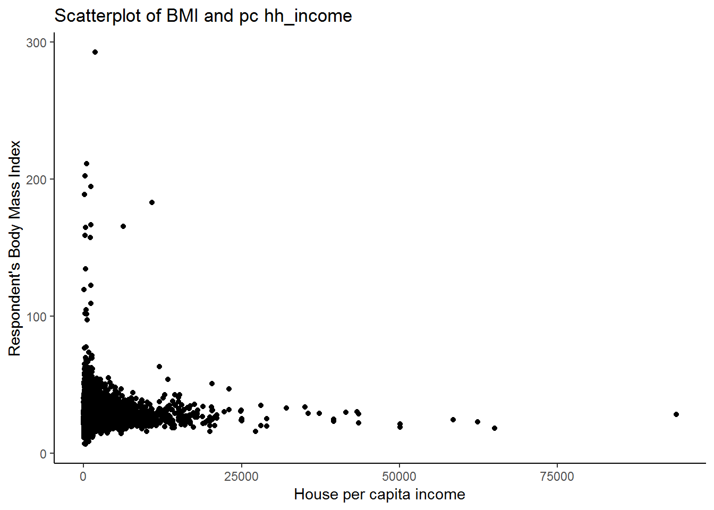
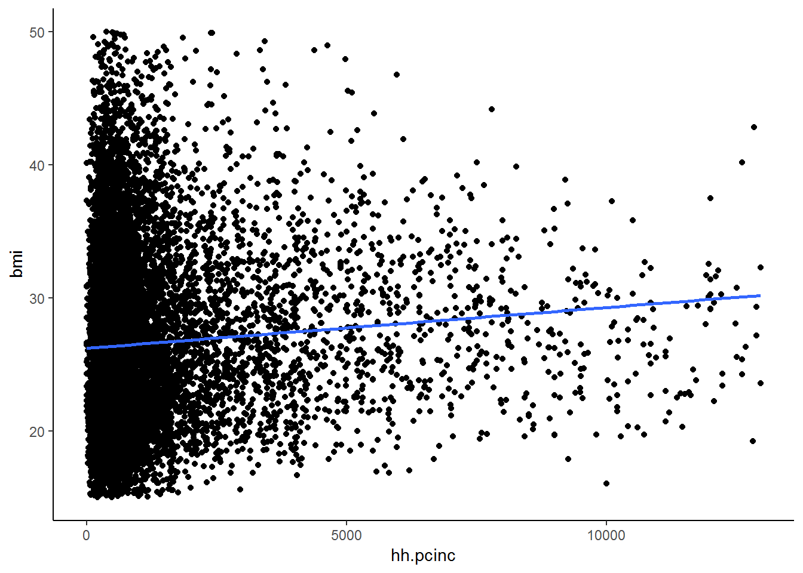
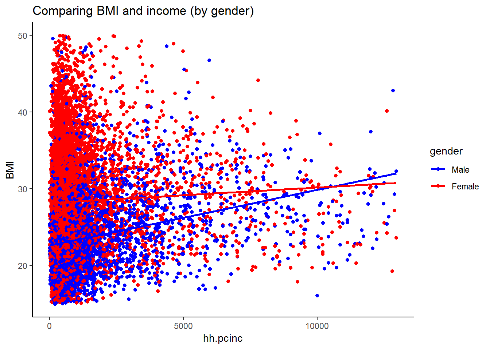
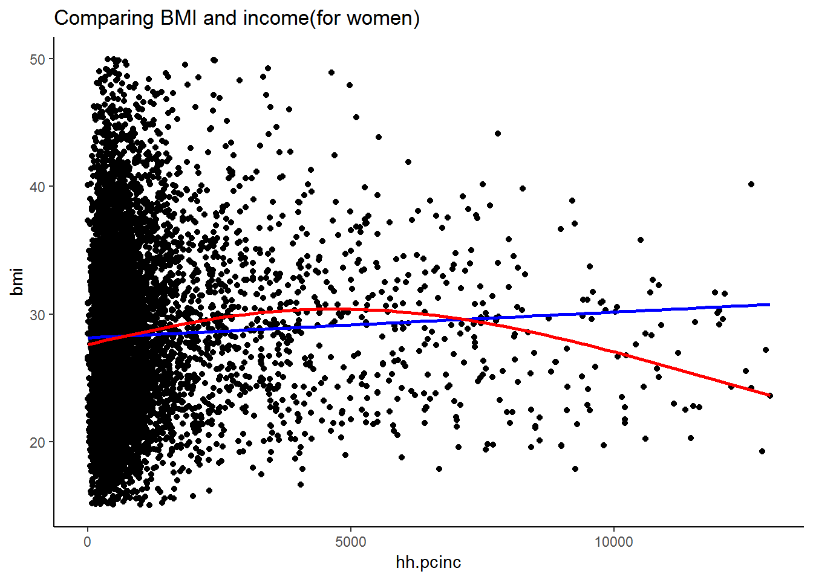

6 Bivariate analysis (cross tabs)
6.1 Getting ready
In the previous chapters we generated some variables and ran some commands that will influence the results that we get in this chapter. If you are starting a new session of R, please run the following lines of code before you begin the chapter. Make sure that you remember what each line of code is doing.
library(foreign)
library(tidyverse)## -- Attaching packages ----------------------- tidyverse 1.2.1 --## v ggplot2 3.0.0 v purrr 0.2.5
## v tibble 1.4.2 v dplyr 0.7.6
## v tidyr 0.8.1 v stringr 1.3.1
## v readr 1.1.1 v forcats 0.3.0## -- Conflicts -------------------------- tidyverse_conflicts() --
## x dplyr::filter() masks stats::filter()
## x dplyr::lag() masks stats::lag()nids<-read.dta("./data/nids.dta", convert.factors=FALSE)
nids<-nids%>%
arrange(hhid, pid)%>%
group_by(hhid) %>%
mutate(hhrestrict = 1:n()) %>%
mutate(hhrestrict = ifelse(hhrestrict==1,1,0))
#Class
nids$class<-NA
nids$class[which(nids$w1_fwag<=1500)]<-1
nids$class[which(nids$w1_fwag>1500 & nids$w1_fwag<=4500)]<-2
nids$class[which(nids$w1_fwag>4500)]<-3
nids$class<-factor(nids$class, levels=1:3, labels = c("Lower Class","Middle Class","Upper Class"))
###Creating a BMI variable - from chapter 2 ***
#Height
nids<-nids %>%
mutate(height = ifelse (w1_a_n1_1 >= 0 & w1_a_best_age_yrs >= 20, w1_a_n1_1/100, NA))
#Weight
nids<-nids %>%
mutate(weight = ifelse (w1_a_n2_1 >= 0 & w1_a_best_age_yrs >= 20, w1_a_n2_1, NA))
#BMI
nids<-nids %>%
mutate(bmi = weight/height^2)
#Valid BMI values
nids<-nids%>%
mutate(bmi_valid = ifelse(bmi > 15 & bmi < 50,1,NA))
#BMI bins
nids$bmi.bins.nolabel<-NA
nids$bmi.bins.nolabel[which(nids$bmi>=15 & nids$bmi<18.5)]<-1
nids$bmi.bins.nolabel[which(nids$bmi>=18.5 & nids$bmi<25)]<-2
nids$bmi.bins.nolabel[which(nids$bmi>=25 & nids$bmi<30)]<-3
nids$bmi.bins.nolabel[which(nids$bmi>=30 & nids$bmi<=50)]<-4
nids$bmi.bins<-factor(nids$bmi.bins.nolabel, levels=1:4, labels = c("Underweight","Normal", "Overweight", "Obese"))
#Age
nids<-nids%>%
mutate(age_adult = ifelse(w1_a_best_age_yrs<0,NA, w1_a_best_age_yrs))
#Age bins
nids$age_bins<-NA
nids$age_bins[which(nids$w1_r_best_age_yrs>=20 & nids$w1_r_best_age_yrs<=29)]<-1
nids$age_bins[which(nids$w1_r_best_age_yrs>29 & nids$w1_r_best_age_yrs<=39)]<-2
nids$age_bins[which(nids$w1_r_best_age_yrs>39 & nids$w1_r_best_age_yrs<=49)]<-3
nids$age_bins[which(nids$w1_r_best_age_yrs>49 & nids$w1_r_best_age_yrs<=59)]<-4
nids$age_bins[which(nids$w1_r_best_age_yrs>59 & nids$w1_r_best_age_yrs<=69)]<-5
nids$age_bins[which(nids$w1_r_best_age_yrs>69 & nids$w1_r_best_age_yrs<=120)]<-6
nids$age_bins <- factor(nids$age_bins, levels = 1:6, labels = c("20 - 29 yrs","30 - 39 yrs", "40 - 49 yrs", "50 - 59 yrs", "60 - 69 yrs", "70 - 120 yrs"))
#Rename
nids <- nids%>%
mutate(race = w1_best_race,
age = w1_r_best_age_yrs,
gender = w1_r_b4,
province = w1_hhprov,
hhincome = w1_hhincome) %>%
mutate(gender = factor(gender, levels = 1:2, labels = c("Male", "Female")),
race = factor(race, levels = 1:4, labels = c("African", "Coloured","Asian", "White")),
province = factor(province, levels=1:9, labels = c("Western Cape","Eastern Cape","Northern Cape","Free State","KwaZulu-Natal","North West","Gauteng","Mpumalanga","Limpopo")),
w1_hhgeo = factor(w1_hhgeo, levels = 1:4, labels = c("Rural formal", "Tribal authority areas","Urban formal", "Urban informal")))6.2 Introduction
Up to this point the majority of our analysis has looked at one variable at a time. This is certainly useful, but we will often want to look at how variables interact with one another. Doing this allows us to conduct more in depth analysis of a particular topic. For example, we have learned that to calculate the average monthly pay using R, we type:
summary(nids$w1_fwag)## Min. 1st Qu. Median Mean 3rd Qu. Max. NA's
## 20.0 936.7 1600.0 3233.4 3550.0 90000.0 26671This command gives us the mean for the entire sample. From the output we see that on average individuals earn R3233.36 per month (of those who report earning). When thinking about income, one can think of several factors that may affect what an individual earns.
Is it likely that an individual with a university degree will earn a higher wage than an individual with no formal education? Is it likely that an older people earn more on average? How do income levels differ by gender? By race?
Hence, while reporting the mean income for the entire sample is useful, examining how income varies by a second variable can be even more helpful in discovering trends in the data. This is an example of Bivariate Analysis. The term Bivariate Analysis sounds rather complicated but do not be intimidated by the name! Below we explain the basics of Bivariate Analysis:
What is bivariate analysis? Bivariate Analysis is the examination of two variables at the same time, hence the name bivariate. It is used frequently by social scientists and mathematicians to compare how two variables correspond with one another. While sophisticated equations can be written to model how one variable changes with respect other variables (regression, the subject of Chapters 7 and 8), we are concerned here with only two variables, whether they are mathematically related or not.
In this chapter, we will examine the relationship between these two variables (bivariate analysis) using crosstabs. A crosstab is a technique for analyzing the relationship between two variables that have been organized in a bivariate table. Using such a table, we can examine the presence and strength of the relationship between two variables.
When would we use bivariate analysis? Although it can be used whenever we have two variables that we want to examine at the same time, bivariate analysis is usually a good tool to apply when we have a hunch that two variables “go together.” If this is the case then bivariate analysis allows us to compare them numerically.
For example, if we were interested in poverty across the country, it would be informative to know how much a household spends on food every month.
The variable we want for food expenditure is “w1_h_expf - food expenditure with full imputations”. Now, we could use the head() command and generate a table with the household ID, individual’s personal identification number (pid), and the amount his or her family spends on food every month.
nids%>%
arrange(hhid)%>%
select(hhid, pid, w1_h_expf)%>%
head(20)## # A tibble: 20 x 3
## # Groups: hhid [7]
## hhid pid w1_h_expf
## <int> <int> <dbl>
## 1 101012 314585 223
## 2 101013 314544 173
## 3 101013 314550 173
## 4 101013 406295 173
## 5 101013 406296 173
## 6 101013 406297 173
## 7 101014 301454 442
## 8 101014 314575 442
## 9 101014 314580 442
## 10 101014 314581 442
## 11 101014 314582 442
## 12 101014 406298 442
## 13 101015 314570 200
## 14 101015 406352 200
## 15 101016 314109 530
## 16 101016 314110 530
## 17 101017 314529 167
## 18 101017 314530 167
## 19 101017 314531 167
## 20 101018 314578 671We can scan the chart to guess a family’s well-being based upon monthly food expenditure, but the amount a family spends on food actually depends on many other things. For instance, we would expect that larger families would spend more on food every month than smaller families because they have more people to feed. In order to answer this question we will need to use the household size variable that we have worked with in previous chapters.
If you can recall, w1_hhsizer is the variable for household size (i.e. number of members). Try listing household size with the previous chart.
nids%>%
arrange(hhid)%>%
select(hhid, pid, w1_h_expf, w1_hhsizer)%>%
head(20)## # A tibble: 20 x 4
## # Groups: hhid [7]
## hhid pid w1_h_expf w1_hhsizer
## <int> <int> <dbl> <int>
## 1 101012 314585 223 1
## 2 101013 314544 173 5
## 3 101013 314550 173 5
## 4 101013 406295 173 5
## 5 101013 406296 173 5
## 6 101013 406297 173 5
## 7 101014 301454 442 6
## 8 101014 314575 442 6
## 9 101014 314580 442 6
## 10 101014 314581 442 6
## 11 101014 314582 442 6
## 12 101014 406298 442 6
## 13 101015 314570 200 2
## 14 101015 406352 200 2
## 15 101016 314109 530 2
## 16 101016 314110 530 2
## 17 101017 314529 167 3
## 18 101017 314530 167 3
## 19 101017 314531 167 3
## 20 101018 314578 671 1Now we have some more information that helps us get a better idea of why particular individuals might live in households that spend more money on food. Here, it makes sense that household 101014 would spend more than household 101015 on food because four more people live there. But notice that household size doesn’t always explain the food expenditure we see. (For example compare household 101018 with household 101014). Let’s consider another variable that may influence household food expenditure, such as its monthly income (w1_hhincome). Let us now try listing this variable with total household monthly food expenditure:
nids%>%
arrange(hhid)%>%
select(hhid, pid, w1_h_expf, w1_hhincome)%>%
head(20)## # A tibble: 20 x 4
## # Groups: hhid [7]
## hhid pid w1_h_expf w1_hhincome
## <int> <int> <dbl> <dbl>
## 1 101012 314585 223 1045.
## 2 101013 314544 173 588.
## 3 101013 314550 173 588.
## 4 101013 406295 173 588.
## 5 101013 406296 173 588.
## 6 101013 406297 173 588.
## 7 101014 301454 442 1307.
## 8 101014 314575 442 1307.
## 9 101014 314580 442 1307.
## 10 101014 314581 442 1307.
## 11 101014 314582 442 1307.
## 12 101014 406298 442 1307.
## 13 101015 314570 200 291.
## 14 101015 406352 200 291.
## 15 101016 314109 530 1304.
## 16 101016 314110 530 1304.
## 17 101017 314529 167 213.
## 18 101017 314530 167 213.
## 19 101017 314531 167 213.
## 20 101018 314578 671 1785.Here, it makes sense that household 101012 spends more money than 101013 on food because they have more money to begin with. Although we can’t be sure that a relationship exists between the variables, we can get a general feel for the relationship between the variables by doing bivariate analysis. Later we will expand these techniques to include three (trivariate) and four (quadivariate) variables.
We have introduced the idea of bivariate analysis using the head()/View() commands. While these commands are simple in some respects, it is rather overwhelming when dealing with large numbers of observations and it is also not the most informative when we are trying to look at more than one variable at a time. In the above example, we know that household 101012 spends more on food every month than 101013 and, in addition, that household 101012 has a higher income. But to make any solid conclusions, we have to search up and down the large list of observations trying to find other examples that fit our hypotheses. This process is tedious and time consuming. We would never want to do it with all of the households in the sample.
6.3 Cross - tabulation
So how do we do bivariate analysis in R? Thank goodness there is another option - cross-tabulations. Suppose we want to look at how adult females perceive their health status compared to adult males. We should start by finding the variables. The two variables are: w1_r_b4 (Gender of household member) and w1_a_j1 (Respondent’s perceived health status). We can tabulate each variable individually, but that isn’t very helpful when trying to figure out how the two variables are related. There is only so much we can learn from tabulating each of these variables individually.
nids%>%
group_by(w1_r_b4)%>%
summarise(n=n())## # A tibble: 2 x 2
## w1_r_b4 n
## <int> <int>
## 1 1 14643
## 2 2 16527nids%>%
group_by(w1_a_j1)%>%
summarise(n=n())## # A tibble: 9 x 2
## w1_a_j1 n
## <int> <int>
## 1 -9 21
## 2 -8 3
## 3 -3 71
## 4 1 4554
## 5 2 3927
## 6 3 3757
## 7 4 2058
## 8 5 1248
## 9 NA 15531That’s a good start, but we still haven’t tabulated the two variables together. A bivariate table (or crosstab) is simply a table that displays the distribution of one variable “across” the categories of a second variable. There are several ways to create a bivariate table in R: xtabs() (stats package), genTable()(memisc package (Elff 2017)), CrossTable() (descr (Dirk Enzmann et al. 2018) or gmodels (Bolker et al. 2018) package), group_by and summarise() (dplyr (Wickham, François, et al. 2018) package) e.t.c.
We are going to use CrossTable() from the gmodels package. The first variable is treated as the row variable and the second is the column variable (see command description from the package documentation). Let us first tidy the perceived health status variable:
Figure 6.1: Labels for Perceived Health Status
table(nids$w1_a_j1)##
## -9 -8 -3 1 2 3 4 5
## 21 3 71 4554 3927 3757 2058 1248We see negative values for different types of missing and we can recode these to NA - missing and make it a factor.
nids$phealth<-ifelse(nids$w1_a_j1>0, nids$w1_a_j1, NA)
nids$phealth<-factor(nids$phealth, levels=1:5, labels=c("Excellent", "Very Good", "Good", "Fair", "Poor"))
table(nids$phealth)##
## Excellent Very Good Good Fair Poor
## 4554 3927 3757 2058 1248library(gmodels)
CrossTable(nids$phealth, nids$gender)##
##
## Cell Contents
## |-------------------------|
## | N |
## | Chi-square contribution |
## | N / Row Total |
## | N / Col Total |
## | N / Table Total |
## |-------------------------|
##
##
## Total Observations in Table: 15544
##
##
## | nids$gender
## nids$phealth | Male | Female | Row Total |
## -------------|-----------|-----------|-----------|
## Excellent | 2136 | 2418 | 4554 |
## | 52.050 | 34.890 | |
## | 0.469 | 0.531 | 0.293 |
## | 0.342 | 0.260 | |
## | 0.137 | 0.156 | |
## -------------|-----------|-----------|-----------|
## Very Good | 1662 | 2265 | 3927 |
## | 4.698 | 3.149 | |
## | 0.423 | 0.577 | 0.253 |
## | 0.266 | 0.243 | |
## | 0.107 | 0.146 | |
## -------------|-----------|-----------|-----------|
## Good | 1362 | 2395 | 3757 |
## | 14.086 | 9.442 | |
## | 0.363 | 0.637 | 0.242 |
## | 0.218 | 0.257 | |
## | 0.088 | 0.154 | |
## -------------|-----------|-----------|-----------|
## Fair | 676 | 1382 | 2058 |
## | 27.207 | 18.237 | |
## | 0.328 | 0.672 | 0.132 |
## | 0.108 | 0.149 | |
## | 0.043 | 0.089 | |
## -------------|-----------|-----------|-----------|
## Poor | 402 | 846 | 1248 |
## | 19.505 | 13.075 | |
## | 0.322 | 0.678 | 0.080 |
## | 0.064 | 0.091 | |
## | 0.026 | 0.054 | |
## -------------|-----------|-----------|-----------|
## Column Total | 6238 | 9306 | 15544 |
## | 0.401 | 0.599 | |
## -------------|-----------|-----------|-----------|
##
## By looking at the table above we can see how perceived health status differs between the men and women in the survey. We see that out of the 6238 males who were meant to report their health status (i.e. not NA-missing), 2136 said their health status was excellent and 402 said it was poor. In general it seems that the results are similar for men and women in the sense that there seems to be a strong tendency for respondents to have a positive perception of their health. The majority of respondents, both male and female, perceived their health status to be above “Good”. However, since we can see that the number of women who answered this question (9306 excluding missing) is much larger than the number of men (6238), it is difficult to compare them accurately by simply looking at the counts.
We can look at N / Col Total, that is the column proportions for each gender.We see that about 0.342 (34.2%) of men ({2136÷6238}×100) perceive their health to be “Excellent” compared to only 0.26 (26%) ({2418÷9306}×100) of women, suggesting that women may be more somewhat more critical of their health.
Let’s try another example to answer one of the questions from the beginning of the chapter.
Is it likely that an individual with a university degree or higher will earn a higher wage than an individual with no form of university education?
Here it is important to first pay attention to the types of variables we are working with. Education is a categorical variable, while income tends to be a continuous variable.
We decided to divide the sample into those who have a university degree and those who do not. We can accomplish this by creating a dummy variable from w1_r_b7.
(#fig:best_edu)Education codes
nids$uni<-1
nids$uni[nids$w1_r_b7 == 20 | nids$w1_r_b7 == 21 | nids$w1_r_b7 == 22 | nids$w1_r_b7 == 23]<-2
nids$uni[nids$w1_r_b7<0 | is.na(nids$w1_r_b7)]<-NA
nids$uni<-factor(nids$uni, levels=1:2, labels= c("no bachelor degree","bachelor degree"))
table(nids$uni)##
## no bachelor degree bachelor degree
## 30337 371Method 1 - using w1_fwag (monthly take home pay)
Now we can summarise w1_fwag on the new uni education variable:
nids %>%
filter(w1_fwag >0 & !is.na(w1_fwag)) %>%
group_by(uni) %>%
summarise(mean_inc=mean(w1_fwag, na.rm=TRUE),
sd_inc=sd(w1_fwag, na.rm=TRUE),
N=n())## # A tibble: 3 x 4
## uni mean_inc sd_inc N
## <fct> <dbl> <dbl> <int>
## 1 no bachelor degree 2844. 4373. 4249
## 2 bachelor degree 12194. 11588. 194
## 3 <NA> 1764. 1711. 56From the table, the average monthly income for University graduates is over 4 times that of people without a bachelor’s degree.
Method 2 - using derived class variable
First, we want to reacquaint ourselves with the class variable that we created in the previous chapter (you should have it in your dataset from running the ‘getting ready’ commands). Can you remember whether a 1 is ‘upper class’ or ‘lower class’? Luckily, we gave the variable a value label to remind us:
table(nids$class)##
## Lower Class Middle Class Upper Class
## 2167 1503 829Since, we already have our categorical/factor income variable, we are in a position to run a cross‐tab of income and our university indicator variable:
CrossTable(nids$uni, nids$class)##
##
## Cell Contents
## |-------------------------|
## | N |
## | Chi-square contribution |
## | N / Row Total |
## | N / Col Total |
## | N / Table Total |
## |-------------------------|
##
##
## Total Observations in Table: 4443
##
##
## | nids$class
## nids$uni | Lower Class | Middle Class | Upper Class | Row Total |
## -------------------|--------------|--------------|--------------|--------------|
## no bachelor degree | 2131 | 1454 | 664 | 4249 |
## | 3.985 | 0.951 | 20.358 | |
## | 0.502 | 0.342 | 0.156 | 0.956 |
## | 0.999 | 0.981 | 0.803 | |
## | 0.480 | 0.327 | 0.149 | |
## -------------------|--------------|--------------|--------------|--------------|
## bachelor degree | 3 | 28 | 163 | 194 |
## | 87.276 | 20.826 | 445.884 | |
## | 0.015 | 0.144 | 0.840 | 0.044 |
## | 0.001 | 0.019 | 0.197 | |
## | 0.001 | 0.006 | 0.037 | |
## -------------------|--------------|--------------|--------------|--------------|
## Column Total | 2134 | 1482 | 827 | 4443 |
## | 0.480 | 0.334 | 0.186 | |
## -------------------|--------------|--------------|--------------|--------------|
##
## As we have mentioned before, dividing income into three arbitrary categories is rather crude. Nevertheless, it gives us a clear pattern regarding the relationship between having a university degree and the income level achieved in the sample. Looking along the first row of N, we see that the majority of people without a bachelors degree are in the ‘lower class’ income bracket. In contrast, looking along the second row we see that the vast majority of people with a bachelors degree are in the ‘upper class’ income bracket. It is useful to notice that you can interpret the table in a different way by looking at the columns. For instance, if we look at the third column we see that the majority of upper class people don’t have a bachelor’s degree (i.e. 664 out of the 827 in the ‘upper class’ income bracket don’t have a bachelor’s degree).
We can also look at this in terms of column percentage N / Col Total or row percentage N / Row Total, the third and fourth row in each cell. For example, 80.3 percent of “Upper Class” do not have a bachelor’s degree or that 15.6% of those with no bachelor’s degree are in upper class.
Now that you’ve learned these new methods, try answering the following questions:
1. How many people live in a house connected to electricity but still use wood as their main energy source for heating?
Question 1 Answer
2. In what province is English most widely spoken?
Question 2 Answer
6.4 Example 1: Where do households with an elderly member tend to live?
In order to answer this question, we will first want to create a household level variable that assigns the age of the oldest member of the household to every member of the household. It is not a simple task at all - in fact you are probably unable to do it with only the commands that you have learned so far. Luckily, the dplyr package provides us with a quick and simple way to do tasks of this nature. In this case, we use the dplyr command to calculate the oldest age within each household and return the result in a data frame:
nids<-nids%>%
group_by(hhid)%>%
mutate(maxage = max(w1_r_best_age_yrs, na.rm = T))Let’s examine more closely what this command tells R to do. We group nids data by the hhid variable and generating a new variable called maxage (=max(w1_r_best_age_yrs)) that is the maximum value of the w1_r_best_age_yrs variable in each unique hhid. Therefore R assigns every individual in the household a value that is equivalent to the oldest age of the person in that individual’s household.
In summary, this line of commands tells R to generate a new variable called maxage and to assign it the value of the maximum age within the household for every member of the household. To verify this command, type the command:
head(nids[,c("hhid", "w1_r_best_age_yrs", "maxage")], n = 25L)## # A tibble: 25 x 3
## # Groups: hhid [8]
## hhid w1_r_best_age_yrs maxage
## <int> <int> <int>
## 1 101012 51 51
## 2 101013 45 45
## 3 101013 32 45
## 4 101013 9 45
## 5 101013 13 45
## 6 101013 11 45
## 7 101014 15 62
## 8 101014 25 62
## 9 101014 60 62
## 10 101014 22 62
## # ... with 15 more rowsWe now have a variable that is the age of the oldest person in each household. It would be possible to run a simple cross tab now, but those results would be incorrect without controlling for the number bias (we only want to count each household once). Thus, we need to correct for that:
nids_max_age<-nids%>%
filter(hhrestrict==1)
#CrossTable(nids_max_age$maxage, nids_max_age$w1_hhgeo, expected = FALSE, prop.r = FALSE, prop.c = FALSE, prop.t = FALSE,prop.chisq = FALSE)For easy of printing to screen, we decided to shorten the level labels for w1_hhgeo to:
RF - Rural formal
TAA - Tribal authority areas
UF - Urban formal
UI - Urban informal
and create a new w1_hhgeo1 variable.
nids_max_age$w1_hhgeo1<-nids_max_age$w1_hhgeo
levels(nids_max_age$w1_hhgeo1)<-c('RF','TAA','UF','UI')
CrossTable(nids_max_age$maxage, nids_max_age$w1_hhgeo1, expected = FALSE, prop.r = FALSE, prop.c = FALSE, prop.t = FALSE,prop.chisq = FALSE)##
##
## Cell Contents
## |-------------------------|
## | N |
## |-------------------------|
##
##
## Total Observations in Table: 7305
##
##
## | nids_max_age$w1_hhgeo1
## nids_max_age$maxage | RF | TAA | UF | UI | Row Total |
## --------------------|-----------|-----------|-----------|-----------|-----------|
## -9 | 6 | 3 | 6 | 0 | 15 |
## --------------------|-----------|-----------|-----------|-----------|-----------|
## -8 | 0 | 0 | 1 | 0 | 1 |
## --------------------|-----------|-----------|-----------|-----------|-----------|
## -3 | 1 | 0 | 0 | 0 | 1 |
## --------------------|-----------|-----------|-----------|-----------|-----------|
## 8 | 0 | 1 | 0 | 0 | 1 |
## --------------------|-----------|-----------|-----------|-----------|-----------|
## 9 | 0 | 1 | 0 | 0 | 1 |
## --------------------|-----------|-----------|-----------|-----------|-----------|
## 12 | 0 | 1 | 0 | 0 | 1 |
## --------------------|-----------|-----------|-----------|-----------|-----------|
## 14 | 0 | 1 | 0 | 0 | 1 |
## --------------------|-----------|-----------|-----------|-----------|-----------|
## 15 | 0 | 2 | 4 | 0 | 6 |
## --------------------|-----------|-----------|-----------|-----------|-----------|
## 16 | 1 | 1 | 1 | 0 | 3 |
## --------------------|-----------|-----------|-----------|-----------|-----------|
## 17 | 0 | 0 | 1 | 0 | 1 |
## --------------------|-----------|-----------|-----------|-----------|-----------|
## 18 | 1 | 8 | 5 | 2 | 16 |
## --------------------|-----------|-----------|-----------|-----------|-----------|
## 19 | 2 | 9 | 23 | 3 | 37 |
## --------------------|-----------|-----------|-----------|-----------|-----------|
## 20 | 4 | 13 | 13 | 3 | 33 |
## --------------------|-----------|-----------|-----------|-----------|-----------|
## 21 | 5 | 12 | 17 | 5 | 39 |
## --------------------|-----------|-----------|-----------|-----------|-----------|
## 22 | 10 | 12 | 27 | 4 | 53 |
## --------------------|-----------|-----------|-----------|-----------|-----------|
## 23 | 11 | 13 | 34 | 10 | 68 |
## --------------------|-----------|-----------|-----------|-----------|-----------|
## 24 | 12 | 15 | 30 | 7 | 64 |
## --------------------|-----------|-----------|-----------|-----------|-----------|
## 25 | 15 | 16 | 36 | 7 | 74 |
## --------------------|-----------|-----------|-----------|-----------|-----------|
## 26 | 17 | 21 | 33 | 10 | 81 |
## --------------------|-----------|-----------|-----------|-----------|-----------|
## 27 | 14 | 15 | 38 | 12 | 79 |
## --------------------|-----------|-----------|-----------|-----------|-----------|
## 28 | 18 | 23 | 48 | 11 | 100 |
## --------------------|-----------|-----------|-----------|-----------|-----------|
## 29 | 14 | 29 | 51 | 12 | 106 |
## --------------------|-----------|-----------|-----------|-----------|-----------|
## 30 | 25 | 25 | 40 | 13 | 103 |
## --------------------|-----------|-----------|-----------|-----------|-----------|
## 31 | 19 | 22 | 52 | 11 | 104 |
## --------------------|-----------|-----------|-----------|-----------|-----------|
## 32 | 17 | 29 | 59 | 16 | 121 |
## --------------------|-----------|-----------|-----------|-----------|-----------|
## 33 | 18 | 39 | 66 | 9 | 132 |
## --------------------|-----------|-----------|-----------|-----------|-----------|
## 34 | 19 | 33 | 65 | 12 | 129 |
## --------------------|-----------|-----------|-----------|-----------|-----------|
## 35 | 17 | 43 | 68 | 9 | 137 |
## --------------------|-----------|-----------|-----------|-----------|-----------|
## 36 | 25 | 29 | 64 | 12 | 130 |
## --------------------|-----------|-----------|-----------|-----------|-----------|
## 37 | 19 | 43 | 87 | 12 | 161 |
## --------------------|-----------|-----------|-----------|-----------|-----------|
## 38 | 24 | 36 | 68 | 13 | 141 |
## --------------------|-----------|-----------|-----------|-----------|-----------|
## 39 | 19 | 39 | 80 | 16 | 154 |
## --------------------|-----------|-----------|-----------|-----------|-----------|
## 40 | 20 | 43 | 79 | 10 | 152 |
## --------------------|-----------|-----------|-----------|-----------|-----------|
## 41 | 22 | 35 | 87 | 13 | 157 |
## --------------------|-----------|-----------|-----------|-----------|-----------|
## 42 | 21 | 50 | 82 | 7 | 160 |
## --------------------|-----------|-----------|-----------|-----------|-----------|
## 43 | 17 | 49 | 95 | 9 | 170 |
## --------------------|-----------|-----------|-----------|-----------|-----------|
## 44 | 22 | 55 | 97 | 15 | 189 |
## --------------------|-----------|-----------|-----------|-----------|-----------|
## 45 | 23 | 50 | 63 | 11 | 147 |
## --------------------|-----------|-----------|-----------|-----------|-----------|
## 46 | 18 | 61 | 74 | 15 | 168 |
## --------------------|-----------|-----------|-----------|-----------|-----------|
## 47 | 17 | 59 | 80 | 10 | 166 |
## --------------------|-----------|-----------|-----------|-----------|-----------|
## 48 | 12 | 61 | 90 | 9 | 172 |
## --------------------|-----------|-----------|-----------|-----------|-----------|
## 49 | 20 | 51 | 75 | 8 | 154 |
## --------------------|-----------|-----------|-----------|-----------|-----------|
## 50 | 17 | 61 | 77 | 9 | 164 |
## --------------------|-----------|-----------|-----------|-----------|-----------|
## 51 | 27 | 44 | 92 | 13 | 176 |
## --------------------|-----------|-----------|-----------|-----------|-----------|
## 52 | 12 | 66 | 68 | 11 | 157 |
## --------------------|-----------|-----------|-----------|-----------|-----------|
## 53 | 15 | 58 | 68 | 7 | 148 |
## --------------------|-----------|-----------|-----------|-----------|-----------|
## 54 | 12 | 65 | 74 | 17 | 168 |
## --------------------|-----------|-----------|-----------|-----------|-----------|
## 55 | 20 | 78 | 78 | 12 | 188 |
## --------------------|-----------|-----------|-----------|-----------|-----------|
## 56 | 21 | 56 | 57 | 7 | 141 |
## --------------------|-----------|-----------|-----------|-----------|-----------|
## 57 | 13 | 53 | 64 | 5 | 135 |
## --------------------|-----------|-----------|-----------|-----------|-----------|
## 58 | 10 | 69 | 55 | 4 | 138 |
## --------------------|-----------|-----------|-----------|-----------|-----------|
## 59 | 14 | 58 | 39 | 10 | 121 |
## --------------------|-----------|-----------|-----------|-----------|-----------|
## 60 | 11 | 46 | 52 | 11 | 120 |
## --------------------|-----------|-----------|-----------|-----------|-----------|
## 61 | 8 | 48 | 48 | 7 | 111 |
## --------------------|-----------|-----------|-----------|-----------|-----------|
## 62 | 9 | 49 | 42 | 5 | 105 |
## --------------------|-----------|-----------|-----------|-----------|-----------|
## 63 | 11 | 34 | 55 | 10 | 110 |
## --------------------|-----------|-----------|-----------|-----------|-----------|
## 64 | 9 | 34 | 44 | 2 | 89 |
## --------------------|-----------|-----------|-----------|-----------|-----------|
## 65 | 6 | 51 | 29 | 5 | 91 |
## --------------------|-----------|-----------|-----------|-----------|-----------|
## 66 | 4 | 53 | 43 | 5 | 105 |
## --------------------|-----------|-----------|-----------|-----------|-----------|
## 67 | 12 | 55 | 41 | 7 | 115 |
## --------------------|-----------|-----------|-----------|-----------|-----------|
## 68 | 9 | 60 | 40 | 4 | 113 |
## --------------------|-----------|-----------|-----------|-----------|-----------|
## 69 | 11 | 53 | 41 | 2 | 107 |
## --------------------|-----------|-----------|-----------|-----------|-----------|
## 70 | 7 | 42 | 34 | 2 | 85 |
## --------------------|-----------|-----------|-----------|-----------|-----------|
## 71 | 6 | 32 | 36 | 5 | 79 |
## --------------------|-----------|-----------|-----------|-----------|-----------|
## 72 | 5 | 30 | 28 | 1 | 64 |
## --------------------|-----------|-----------|-----------|-----------|-----------|
## 73 | 6 | 34 | 37 | 1 | 78 |
## --------------------|-----------|-----------|-----------|-----------|-----------|
## 74 | 4 | 37 | 22 | 1 | 64 |
## --------------------|-----------|-----------|-----------|-----------|-----------|
## 75 | 10 | 34 | 16 | 4 | 64 |
## --------------------|-----------|-----------|-----------|-----------|-----------|
## 76 | 4 | 33 | 20 | 3 | 60 |
## --------------------|-----------|-----------|-----------|-----------|-----------|
## 77 | 1 | 46 | 32 | 4 | 83 |
## --------------------|-----------|-----------|-----------|-----------|-----------|
## 78 | 7 | 25 | 17 | 4 | 53 |
## --------------------|-----------|-----------|-----------|-----------|-----------|
## 79 | 7 | 20 | 22 | 4 | 53 |
## --------------------|-----------|-----------|-----------|-----------|-----------|
## 80 | 4 | 17 | 16 | 2 | 39 |
## --------------------|-----------|-----------|-----------|-----------|-----------|
## 81 | 2 | 27 | 6 | 0 | 35 |
## --------------------|-----------|-----------|-----------|-----------|-----------|
## 82 | 2 | 25 | 16 | 1 | 44 |
## --------------------|-----------|-----------|-----------|-----------|-----------|
## 83 | 2 | 12 | 10 | 0 | 24 |
## --------------------|-----------|-----------|-----------|-----------|-----------|
## 84 | 1 | 8 | 6 | 1 | 16 |
## --------------------|-----------|-----------|-----------|-----------|-----------|
## 85 | 2 | 7 | 3 | 0 | 12 |
## --------------------|-----------|-----------|-----------|-----------|-----------|
## 86 | 1 | 11 | 3 | 0 | 15 |
## --------------------|-----------|-----------|-----------|-----------|-----------|
## 87 | 1 | 12 | 3 | 1 | 17 |
## --------------------|-----------|-----------|-----------|-----------|-----------|
## 88 | 1 | 15 | 4 | 1 | 21 |
## --------------------|-----------|-----------|-----------|-----------|-----------|
## 89 | 0 | 3 | 5 | 2 | 10 |
## --------------------|-----------|-----------|-----------|-----------|-----------|
## 90 | 3 | 6 | 3 | 0 | 12 |
## --------------------|-----------|-----------|-----------|-----------|-----------|
## 91 | 0 | 2 | 4 | 0 | 6 |
## --------------------|-----------|-----------|-----------|-----------|-----------|
## 92 | 0 | 3 | 2 | 0 | 5 |
## --------------------|-----------|-----------|-----------|-----------|-----------|
## 93 | 0 | 4 | 2 | 0 | 6 |
## --------------------|-----------|-----------|-----------|-----------|-----------|
## 94 | 1 | 5 | 2 | 0 | 8 |
## --------------------|-----------|-----------|-----------|-----------|-----------|
## 95 | 1 | 1 | 2 | 0 | 4 |
## --------------------|-----------|-----------|-----------|-----------|-----------|
## 96 | 0 | 2 | 0 | 0 | 2 |
## --------------------|-----------|-----------|-----------|-----------|-----------|
## 97 | 1 | 1 | 1 | 1 | 4 |
## --------------------|-----------|-----------|-----------|-----------|-----------|
## 98 | 0 | 2 | 2 | 1 | 5 |
## --------------------|-----------|-----------|-----------|-----------|-----------|
## 99 | 0 | 2 | 0 | 0 | 2 |
## --------------------|-----------|-----------|-----------|-----------|-----------|
## 100 | 1 | 0 | 1 | 0 | 2 |
## --------------------|-----------|-----------|-----------|-----------|-----------|
## 101 | 0 | 1 | 1 | 0 | 2 |
## --------------------|-----------|-----------|-----------|-----------|-----------|
## 105 | 0 | 1 | 0 | 0 | 1 |
## --------------------|-----------|-----------|-----------|-----------|-----------|
## Column Total | 856 | 2639 | 3302 | 508 | 7305 |
## --------------------|-----------|-----------|-----------|-----------|-----------|
##
## While there are some interesting households which report having very young members as the oldest in the household, if we examine the table closely it seems that most households with elderly people reside in Tribal Authority Areas and Urban Formal Areas. But if we look at the Total row, we can see that these areas also contain the majority of households. What do you think is the best way to address our question? One way would be to look at the proportion of total households in a given area that have a member over a certain age, say 80.
nids_max_age80<-nids_max_age%>%
filter(maxage>80)
CrossTable(nids_max_age80$maxage, nids_max_age80$w1_hhgeo1, expected = FALSE, prop.r = FALSE, prop.c = FALSE, prop.t = FALSE,prop.chisq = FALSE)##
##
## Cell Contents
## |-------------------------|
## | N |
## |-------------------------|
##
##
## Total Observations in Table: 253
##
##
## | nids_max_age80$w1_hhgeo1
## nids_max_age80$maxage | RF | TAA | UF | UI | Row Total |
## ----------------------|-----------|-----------|-----------|-----------|-----------|
## 81 | 2 | 27 | 6 | 0 | 35 |
## ----------------------|-----------|-----------|-----------|-----------|-----------|
## 82 | 2 | 25 | 16 | 1 | 44 |
## ----------------------|-----------|-----------|-----------|-----------|-----------|
## 83 | 2 | 12 | 10 | 0 | 24 |
## ----------------------|-----------|-----------|-----------|-----------|-----------|
## 84 | 1 | 8 | 6 | 1 | 16 |
## ----------------------|-----------|-----------|-----------|-----------|-----------|
## 85 | 2 | 7 | 3 | 0 | 12 |
## ----------------------|-----------|-----------|-----------|-----------|-----------|
## 86 | 1 | 11 | 3 | 0 | 15 |
## ----------------------|-----------|-----------|-----------|-----------|-----------|
## 87 | 1 | 12 | 3 | 1 | 17 |
## ----------------------|-----------|-----------|-----------|-----------|-----------|
## 88 | 1 | 15 | 4 | 1 | 21 |
## ----------------------|-----------|-----------|-----------|-----------|-----------|
## 89 | 0 | 3 | 5 | 2 | 10 |
## ----------------------|-----------|-----------|-----------|-----------|-----------|
## 90 | 3 | 6 | 3 | 0 | 12 |
## ----------------------|-----------|-----------|-----------|-----------|-----------|
## 91 | 0 | 2 | 4 | 0 | 6 |
## ----------------------|-----------|-----------|-----------|-----------|-----------|
## 92 | 0 | 3 | 2 | 0 | 5 |
## ----------------------|-----------|-----------|-----------|-----------|-----------|
## 93 | 0 | 4 | 2 | 0 | 6 |
## ----------------------|-----------|-----------|-----------|-----------|-----------|
## 94 | 1 | 5 | 2 | 0 | 8 |
## ----------------------|-----------|-----------|-----------|-----------|-----------|
## 95 | 1 | 1 | 2 | 0 | 4 |
## ----------------------|-----------|-----------|-----------|-----------|-----------|
## 96 | 0 | 2 | 0 | 0 | 2 |
## ----------------------|-----------|-----------|-----------|-----------|-----------|
## 97 | 1 | 1 | 1 | 1 | 4 |
## ----------------------|-----------|-----------|-----------|-----------|-----------|
## 98 | 0 | 2 | 2 | 1 | 5 |
## ----------------------|-----------|-----------|-----------|-----------|-----------|
## 99 | 0 | 2 | 0 | 0 | 2 |
## ----------------------|-----------|-----------|-----------|-----------|-----------|
## 100 | 1 | 0 | 1 | 0 | 2 |
## ----------------------|-----------|-----------|-----------|-----------|-----------|
## 101 | 0 | 1 | 1 | 0 | 2 |
## ----------------------|-----------|-----------|-----------|-----------|-----------|
## 105 | 0 | 1 | 0 | 0 | 1 |
## ----------------------|-----------|-----------|-----------|-----------|-----------|
## Column Total | 19 | 150 | 76 | 8 | 253 |
## ----------------------|-----------|-----------|-----------|-----------|-----------|
##
## This gives us a slightly clearer picture as we can see that almost double the number of households with a member over the age of 80 live in Tribal Authorities Areas in comparison to Urban Formal. Nevertheless, let’s calculate the percentage of households with an elderly member in relation to the total number of households in a given area to get more precise results:
Total households
tothh<-nids_max_age %>%
group_by(w1_hhgeo) %>%
summarise(hh=n())
tothh## # A tibble: 4 x 2
## w1_hhgeo hh
## <fct> <int>
## 1 Rural formal 856
## 2 Tribal authority areas 2639
## 3 Urban formal 3302
## 4 Urban informal 508Over 80 households
tothh80<-nids_max_age80 %>%
group_by(w1_hhgeo) %>%
summarise(hh80=n())
tothh80## # A tibble: 4 x 2
## w1_hhgeo hh80
## <fct> <int>
## 1 Rural formal 19
## 2 Tribal authority areas 150
## 3 Urban formal 76
## 4 Urban informal 8Bind together
hh<-cbind(tothh80,tothh[,2])
hh## w1_hhgeo hh80 hh
## 1 Rural formal 19 856
## 2 Tribal authority areas 150 2639
## 3 Urban formal 76 3302
## 4 Urban informal 8 508hh %>%
mutate(percent=round(hh80/hh*100,2))## w1_hhgeo hh80 hh percent
## 1 Rural formal 19 856 2.22
## 2 Tribal authority areas 150 2639 5.68
## 3 Urban formal 76 3302 2.30
## 4 Urban informal 8 508 1.57It is clear from this table that the percentage of households containing a member over the age of 80 is far greater in Tribal Authorities Areas. It would be interesting to investigate the reasons for this (Is it simply because households are larger in Tribal Authority Areas? Are young families migrating to the city? Or is there some other reason?), but we will not do that here.
6.5 Example 2: Is there a relationship between the race of a household and the average age of the household?
In order to answer this question, the first thing we need to do is create a variable that assigns the average age of the household to every member of the household. The group_by() %>% mutate() command is necessary to do this. Type:
nids<-nids%>%
mutate(age1 = ifelse(age>0, age, NA))%>%
group_by(hhid)%>%
mutate(avgage = mean(age1, na.rm=T))Can you work out what each of the parts of the line of command is doing? We first create a variable age1 that does not include no-response values or negative values. Then we group_by(hhid) telling R that whatever computation that is going to do will be grouped by hhid. The last mutate command is telling R to create a variable called avgage that gives each person in the sample a value equal to the average age of that individual’s household (hhid).
It is instructive to think about what would happen if we specified the option group_by(w1_hhgeo) instead of group_by(hhid)? If that were the case, then the command would tell R to create a variable called avgage, which gave each person the value equal to the average age of all the people who live in the same geo‐type. Try it and then check the new variable you create. Make sure you give the new variable you create a different name to avgage.
Moving on with our example, we are working at the household level and therefore we will need a household level race variable. Leaving aside the question of whether it is appropriate to assign a race to an entire household, for simplicity we will use the race of the resident head as the household race. Let’s create a household level race variable:
nids<-nids%>%
mutate(hrace = if_else(w1_r_b3==1, w1_best_race,NA_integer_)) %>%
group_by(hhid)%>%
mutate(hhrace = max(hrace, na.rm=TRUE))
table(nids$hhrace)##
## -Inf 1 2 3 4
## 2573 22494 4191 440 1472What have we done here? In the first mutate we generated a variable hrace that takes on the race value of the head of the household, but it is only assigned this value for the household head (w1_r_b3==1). Every other member of the household is assigned an NA‐missing value. The last mutate() code tells R to create a new variable hhrace and assign every member of the household the maximum value of hrace because we have grouped by hhid. Does this make sense? Surely, we don’t want to take the maximum race in the household - what does maximum race even mean? The trick here is that the first mutate line of code assigns a race value to hrace for only one member of every household. Therefore, the maximum is just going to be that solitary value. You could equally well have used the minimum option and achieved the exact same result. We now have our household level race variable and can move on with the example. Before we move on, let’s attach value/factor labels to our new hhrace variable:
nids<-nids%>%
mutate(hhrace = factor(hhrace, levels = 1:4, labels=c("African","Coloured","Asian_Indian","White")))Since we are working at the household level, we use hhrestrict to limit our cross tab to one observation per household. Type:
#nids_max_hhrace_age<-nids%>%
# filter(hhrestrict==1)%>%
# select(hhrace, avgage)
#CrossTable(nids_max_hhrace_age$avgage, nids_max_hhrace_age$hhrace, expected = FALSE, prop.r = FALSE, prop.c = FALSE, prop.t = FALSE,prop.chisq = FALSE)Now, we could look through this table and get some sort of indication of the household age distribution by race, but there are really too many entries in the table to draw any meaningful conclusions. In addition to this, we have the same challenge as we did previously where the African column has a far larger total which makes interpretation difficult if we don’t use percentages.
The ideal situation would be to somehow split up the sample into racial categories and then get some sort of summary of the average age distribution in each racial group. While this may seem quite complicated, we can do it by combining tools that we have already learned. Let’s try this:
nids%>%
group_by(hhrace)%>%
summarise(Mini = min(avgage, na.rm=TRUE),
Mean = mean(avgage, na.rm=TRUE),
Median = median(avgage, na.rm=TRUE),
Max = max(avgage, na.rm=TRUE),
N = n())## # A tibble: 5 x 6
## hhrace Mini Mean Median Max N
## <fct> <dbl> <dbl> <dbl> <dbl> <int>
## 1 African 6.5 27.2 25 99 22494
## 2 Coloured 12 29.2 27 91 4191
## 3 Asian_Indian 15 32.1 28 83.5 440
## 4 White 8.33 39.7 35 83 1472
## 5 <NA> 9 25.1 23.8 72 2573Note: Stata excludes those with missing age in in both mean and N whereas R includes them in N.
nids%>%
group_by(hhrace)%>%
summarise(Mini = min(avgage, na.rm=T),
Mean = mean(avgage, na.rm=T),
Median = median(avgage, na.rm=T),
Max = max(avgage, na.rm=T),
Std.dev = sd(avgage, na.rm=T),
N = n())## # A tibble: 5 x 7
## hhrace Mini Mean Median Max Std.dev N
## <fct> <dbl> <dbl> <dbl> <dbl> <dbl> <int>
## 1 African 6.5 27.2 25 99 10.1 22494
## 2 Coloured 12 29.2 27 91 11.0 4191
## 3 Asian_Indian 15 32.1 28 83.5 12.4 440
## 4 White 8.33 39.7 35 83 17.0 1472
## 5 <NA> 9 25.1 23.8 72 7.75 2573Now, let’s return to the question at hand: is there a relationship between the average age of a household and the race of the household? Given the output above, we have a lot of information that can help us answer this question. One method would be to compare the median or mean of average household age in the different racial groups. For example, the median of average household age in White households is 35, while it is 25 in African households. Basically the median White household has an average age of around 35 - more than ten years more than the median African household. This results are even stronger for the mean. These results suggest a strong relationship between the race of a household and the average age in the household.
Nevertheless, this process of acquiring these results regarding the relationship between household race and household average age has been rather ungainly and the precise relationship is still unclear. We don’t know what is driving this relationship - are the elderly in White households simply living longer than the elderly in African households, or have African households been having more babies than White households in recent years? In order to address these questions and get to understand the determinants of the differing household age composition of the different racial groups, we will need to learn regression analysis. We will do this in chapter 7 and 8.
6.6 Example 3: Does the level of satisfaction differ in different race/gender groupings?
Here we introduce another useful command: paste (more like equivalent of STATA egen, group()) command to create three variable cross-tabulations. Suppose we are interested in examining the level of satisfaction of each person by race and gender.
We start by cleaning some of the variables
Using the paste command, we can type:
nids$race.gender<-paste(nids$race,nids$gender, sep = "-")Let’s make sure we understand what we just told R to do. The paste command tells R to concatenate and create a new variable, race.gender, that takes on the combinations African Male, African Female, for the race and gender combinations in our case. Let’s look at the cross tabulation of our cleaned variables race and gender first:
CrossTable(nids$race, nids$gender, expected = FALSE, prop.r = FALSE, prop.c = FALSE, prop.t = FALSE,prop.chisq = FALSE)##
##
## Cell Contents
## |-------------------------|
## | N |
## |-------------------------|
##
##
## Total Observations in Table: 28194
##
##
## | nids$gender
## nids$race | Male | Female | Row Total |
## -------------|-----------|-----------|-----------|
## African | 10163 | 11994 | 22157 |
## -------------|-----------|-----------|-----------|
## Coloured | 1948 | 2218 | 4166 |
## -------------|-----------|-----------|-----------|
## Asian | 202 | 237 | 439 |
## -------------|-----------|-----------|-----------|
## White | 683 | 749 | 1432 |
## -------------|-----------|-----------|-----------|
## Column Total | 12996 | 15198 | 28194 |
## -------------|-----------|-----------|-----------|
##
## Or
mytable <- xtabs(~race+gender, data=nids)
ftable(mytable)## gender Male Female
## race
## African 10163 11994
## Coloured 1948 2218
## Asian 202 237
## White 683 749This simple crosstab tells us the frequency count of each combination of race and gender. For instance, we can see that there are 10163 African Males. Now, let’s look at our newly created variable, race.gender:
nids%>%
group_by(race.gender)%>%
summarise(n=n())## # A tibble: 10 x 2
## race.gender n
## <chr> <int>
## 1 African-Female 11994
## 2 African-Male 10163
## 3 Asian-Female 237
## 4 Asian-Male 202
## 5 Coloured-Female 2218
## 6 Coloured-Male 1948
## 7 NA-Female 1329
## 8 NA-Male 1647
## 9 White-Female 749
## 10 White-Male 683Now we can examine the cross tab of level of satisfaction (w1_a_m5) and our new variable race.gender. This means we will be now examining the difference in the perceived satisfaction of respondents (adults only) by race and gender.
CrossTable(nids$w1_a_m5, nids$race.gender, expected = FALSE, prop.r = FALSE, prop.c = FALSE, prop.t = FALSE, prop.chisq = FALSE)##
##
## Cell Contents
## |-------------------------|
## | N |
## |-------------------------|
##
##
## Total Observations in Table: 15630
##
##
## | nids$race.gender
## nids$w1_a_m5 | African-Female | African-Male | Asian-Female | Asian-Male | Coloured-Female | Coloured-Male | NA-Female | NA-Male | White-Female | White-Male | Row Total |
## -------------|-----------------|-----------------|-----------------|-----------------|-----------------|-----------------|-----------------|-----------------|-----------------|-----------------|-----------------|
## -9 | 786 | 487 | 4 | 2 | 96 | 37 | 0 | 0 | 12 | 9 | 1433 |
## -------------|-----------------|-----------------|-----------------|-----------------|-----------------|-----------------|-----------------|-----------------|-----------------|-----------------|-----------------|
## -8 | 80 | 63 | 0 | 0 | 11 | 5 | 0 | 0 | 1 | 3 | 163 |
## -------------|-----------------|-----------------|-----------------|-----------------|-----------------|-----------------|-----------------|-----------------|-----------------|-----------------|-----------------|
## -5 | 2 | 0 | 0 | 0 | 0 | 0 | 0 | 0 | 0 | 0 | 2 |
## -------------|-----------------|-----------------|-----------------|-----------------|-----------------|-----------------|-----------------|-----------------|-----------------|-----------------|-----------------|
## -3 | 87 | 62 | 0 | 0 | 52 | 29 | 0 | 0 | 5 | 5 | 240 |
## -------------|-----------------|-----------------|-----------------|-----------------|-----------------|-----------------|-----------------|-----------------|-----------------|-----------------|-----------------|
## 1 | 568 | 370 | 3 | 4 | 29 | 27 | 0 | 1 | 3 | 2 | 1007 |
## -------------|-----------------|-----------------|-----------------|-----------------|-----------------|-----------------|-----------------|-----------------|-----------------|-----------------|-----------------|
## 2 | 407 | 247 | 1 | 1 | 20 | 13 | 1 | 0 | 3 | 8 | 701 |
## -------------|-----------------|-----------------|-----------------|-----------------|-----------------|-----------------|-----------------|-----------------|-----------------|-----------------|-----------------|
## 3 | 736 | 432 | 2 | 3 | 34 | 23 | 0 | 0 | 9 | 7 | 1246 |
## -------------|-----------------|-----------------|-----------------|-----------------|-----------------|-----------------|-----------------|-----------------|-----------------|-----------------|-----------------|
## 4 | 1041 | 622 | 7 | 4 | 103 | 53 | 2 | 0 | 17 | 18 | 1867 |
## -------------|-----------------|-----------------|-----------------|-----------------|-----------------|-----------------|-----------------|-----------------|-----------------|-----------------|-----------------|
## 5 | 1220 | 781 | 28 | 14 | 229 | 166 | 1 | 2 | 65 | 52 | 2558 |
## -------------|-----------------|-----------------|-----------------|-----------------|-----------------|-----------------|-----------------|-----------------|-----------------|-----------------|-----------------|
## 6 | 805 | 599 | 13 | 12 | 146 | 117 | 0 | 1 | 58 | 52 | 1803 |
## -------------|-----------------|-----------------|-----------------|-----------------|-----------------|-----------------|-----------------|-----------------|-----------------|-----------------|-----------------|
## 7 | 647 | 473 | 30 | 18 | 172 | 128 | 1 | 0 | 93 | 71 | 1633 |
## -------------|-----------------|-----------------|-----------------|-----------------|-----------------|-----------------|-----------------|-----------------|-----------------|-----------------|-----------------|
## 8 | 387 | 315 | 33 | 26 | 183 | 104 | 1 | 0 | 146 | 110 | 1305 |
## -------------|-----------------|-----------------|-----------------|-----------------|-----------------|-----------------|-----------------|-----------------|-----------------|-----------------|-----------------|
## 9 | 142 | 110 | 1 | 4 | 69 | 44 | 0 | 0 | 47 | 38 | 455 |
## -------------|-----------------|-----------------|-----------------|-----------------|-----------------|-----------------|-----------------|-----------------|-----------------|-----------------|-----------------|
## 10 | 441 | 337 | 15 | 7 | 203 | 134 | 1 | 0 | 48 | 31 | 1217 |
## -------------|-----------------|-----------------|-----------------|-----------------|-----------------|-----------------|-----------------|-----------------|-----------------|-----------------|-----------------|
## Column Total | 7349 | 4898 | 137 | 95 | 1347 | 880 | 7 | 4 | 507 | 406 | 15630 |
## -------------|-----------------|-----------------|-----------------|-----------------|-----------------|-----------------|-----------------|-----------------|-----------------|-----------------|-----------------|
##
## # Other options - (table(A,B))
# mycrosstab<-table(nids$w1_a_m5, nids$race.gender)
# mycrosstab #print table
#
# margin.table(mycrosstab, 1) # A frequencies (summed over B)
# margin.table(mycrosstab, 2) # B frequencies (summed over A)
#
# round(prop.table(mycrosstab),3) # cell percentages
# round(prop.table(mycrosstab, 1),3) # row percentages
# round(prop.table(mycrosstab, 2),3) # column percentagesThere are many cells in this cross tab, so perhaps it is best if we try to w1_a_m5>0 to help us with our interpretation:
nids_temp<-nids %>%
filter(w1_a_m5>0 & !is.na(race))
CrossTable(nids_temp$w1_a_m5, nids_temp$race.gender, expected = FALSE,prop.r = FALSE, prop.c = TRUE, prop.t = FALSE,prop.chisq = FALSE)##
##
## Cell Contents
## |-------------------------|
## | N |
## | N / Col Total |
## |-------------------------|
##
##
## Total Observations in Table: 13781
##
##
## | nids_temp$race.gender
## nids_temp$w1_a_m5 | African-Female | African-Male | Asian-Female | Asian-Male | Coloured-Female | Coloured-Male | White-Female | White-Male | Row Total |
## ------------------|-----------------|-----------------|-----------------|-----------------|-----------------|-----------------|-----------------|-----------------|-----------------|
## 1 | 568 | 370 | 3 | 4 | 29 | 27 | 3 | 2 | 1006 |
## | 0.089 | 0.086 | 0.023 | 0.043 | 0.024 | 0.033 | 0.006 | 0.005 | |
## ------------------|-----------------|-----------------|-----------------|-----------------|-----------------|-----------------|-----------------|-----------------|-----------------|
## 2 | 407 | 247 | 1 | 1 | 20 | 13 | 3 | 8 | 700 |
## | 0.064 | 0.058 | 0.008 | 0.011 | 0.017 | 0.016 | 0.006 | 0.021 | |
## ------------------|-----------------|-----------------|-----------------|-----------------|-----------------|-----------------|-----------------|-----------------|-----------------|
## 3 | 736 | 432 | 2 | 3 | 34 | 23 | 9 | 7 | 1246 |
## | 0.115 | 0.101 | 0.015 | 0.032 | 0.029 | 0.028 | 0.018 | 0.018 | |
## ------------------|-----------------|-----------------|-----------------|-----------------|-----------------|-----------------|-----------------|-----------------|-----------------|
## 4 | 1041 | 622 | 7 | 4 | 103 | 53 | 17 | 18 | 1865 |
## | 0.163 | 0.145 | 0.053 | 0.043 | 0.087 | 0.066 | 0.035 | 0.046 | |
## ------------------|-----------------|-----------------|-----------------|-----------------|-----------------|-----------------|-----------------|-----------------|-----------------|
## 5 | 1220 | 781 | 28 | 14 | 229 | 166 | 65 | 52 | 2555 |
## | 0.191 | 0.182 | 0.211 | 0.151 | 0.193 | 0.205 | 0.133 | 0.134 | |
## ------------------|-----------------|-----------------|-----------------|-----------------|-----------------|-----------------|-----------------|-----------------|-----------------|
## 6 | 805 | 599 | 13 | 12 | 146 | 117 | 58 | 52 | 1802 |
## | 0.126 | 0.140 | 0.098 | 0.129 | 0.123 | 0.145 | 0.119 | 0.134 | |
## ------------------|-----------------|-----------------|-----------------|-----------------|-----------------|-----------------|-----------------|-----------------|-----------------|
## 7 | 647 | 473 | 30 | 18 | 172 | 128 | 93 | 71 | 1632 |
## | 0.101 | 0.110 | 0.226 | 0.194 | 0.145 | 0.158 | 0.190 | 0.183 | |
## ------------------|-----------------|-----------------|-----------------|-----------------|-----------------|-----------------|-----------------|-----------------|-----------------|
## 8 | 387 | 315 | 33 | 26 | 183 | 104 | 146 | 110 | 1304 |
## | 0.061 | 0.073 | 0.248 | 0.280 | 0.154 | 0.129 | 0.299 | 0.283 | |
## ------------------|-----------------|-----------------|-----------------|-----------------|-----------------|-----------------|-----------------|-----------------|-----------------|
## 9 | 142 | 110 | 1 | 4 | 69 | 44 | 47 | 38 | 455 |
## | 0.022 | 0.026 | 0.008 | 0.043 | 0.058 | 0.054 | 0.096 | 0.098 | |
## ------------------|-----------------|-----------------|-----------------|-----------------|-----------------|-----------------|-----------------|-----------------|-----------------|
## 10 | 441 | 337 | 15 | 7 | 203 | 134 | 48 | 31 | 1216 |
## | 0.069 | 0.079 | 0.113 | 0.075 | 0.171 | 0.166 | 0.098 | 0.080 | |
## ------------------|-----------------|-----------------|-----------------|-----------------|-----------------|-----------------|-----------------|-----------------|-----------------|
## Column Total | 6394 | 4286 | 133 | 93 | 1188 | 809 | 489 | 389 | 13781 |
## | 0.464 | 0.311 | 0.010 | 0.007 | 0.086 | 0.059 | 0.035 | 0.028 | |
## ------------------|-----------------|-----------------|-----------------|-----------------|-----------------|-----------------|-----------------|-----------------|-----------------|
##
## This sets the non-response values of the satisfaction variable to missing and then generates the above table:
From this table we can see that there is not as much difference between the sexes within each race. However it appears that on average African adults have far lower satisfaction levels than the other racial groups, with White adults having the highest satisfaction levels.
6.7 Example 4: Comparing Household Monthly Income from the labour market to individual monthly takehome pay
In the NIDS data set, the total monthly income of a household from the labour market was computed using a number of different rules. According to the metadata: “This variable is calculated by aggregating income from formal employment, casual labour, self-employment and income from helping friends with their business”. An interesting question then is: how different is the computed household labour-market monthly income (w1_hhwag) from the sum of the individual take-home pay (from primary employment) of every member in the household? Let’s examine this using the dplyr commands. To compute a variable that is the sum of all individual incomes (w1_fwag) for each member of a household, we can type:
nids<-nids%>%
group_by(hhid)%>%
mutate(tot_fwag=sum(w1_fwag, na.rm=TRUE))Now, to test to see how different these two measures of income are all one has to do is list hhid tot_fwag and w1_hhwage together.
#subset to match extract from the Stata course
head(subset(nids, subset=hhid>=101066, select=c(hhid,tot_fwag, w1_hhwage)), n=20L)## # A tibble: 20 x 3
## # Groups: hhid [6]
## hhid tot_fwag w1_hhwage
## <int> <dbl> <dbl>
## 1 101066 2500 2500
## 2 101066 2500 2500
## 3 101066 2500 2500
## 4 101066 2500 2500
## 5 101066 2500 2500
## 6 101066 2500 2500
## 7 101066 2500 2500
## 8 101066 2500 2500
## 9 101067 2400 2525
## 10 101067 2400 2525
## 11 101067 2400 2525
## 12 101067 2400 2525
## 13 101067 2400 2525
## 14 101069 0 180
## 15 101070 0 585.
## 16 101070 0 585.
## 17 101072 0 NA
## 18 101072 0 NA
## 19 101072 0 NA
## 20 101073 0 NAIn many cases, there are significant differences between the sum of a household’s individual take-home pay and household monthly income from the labour-market. In addition, there are many instances where entire households have not given a single value for individual take-home pay but there is a value for the household variable. There are two possible reasons for these differences: firstly, the individual level variable only gives income from the a person’s primary source of employment while the household variable uses aggregate income from various sources; secondly, in some cases income for the household income has been imputed based on various household characteristics.
One could also use the dplyr commands to compute other very useful variables. For example, one could compute the total number of children in a household for each household, or total number of births in the last year by province.
There are many useful ways to use dplyr group_by, and hopefully, these practice questions can assist you in gaining speed.
6. Create a variable that is equal to one for exactly one member in every household.
Question 6 Answer
7. What is the total household income for the Kwa-Zulu Natal?
Question 7 Answer
6.8 Chi-Squared: testing for independence
By now, we have examined tables of variables. Perhaps you have noticed that in a few examples as one variable increased or decreased, the other variable in the cross tab decreased or increased. While the naked eye is fairly good at noticing these relationships, it is unclear how accurate the relationships are until we examine them statistically. It is a good idea before any further analysis of the variables occurs to test whether the variables in the crosstab are independent or not. By independent, we mean whether as X moves one way or another, Y’s movements are completely random with respect to X. For instance, in children height is clearly not independent of age - older children are generally taller. In contrast, amongst 30 - 40 year olds, height is likely to be independent of age. As we shall see in the next chapter, testing for statistical independence is useful test to learn at this point. Note that this test for independence will test for any kind of functional relationship. However, in the next chapter, we will be working only with linear relationships.
Let’s try this simple example with the variables, w1_a_h35 - “Respondent has driver’s license” and w1_a_g4 -“Ownership of a motor vehicle (private) in running condition”. Basically, we are going to ask whether there is a relationship between these two variables - are people who have a driver’s license more likely to own a vehicle?
nids$dl<-nids$w1_a_h35
nids$dl[nids$w1_a_h35<0]<-NA
nids$mv<-nids$w1_a_g4
nids$mv[nids$w1_a_g4<0]<-NA
nids$mv<-factor(nids$mv, levels = 1:2, labels = c("Yes","No"))
nids$dl<-factor(nids$dl, levels = 1:2, labels = c("Yes","No"))
CrossTable(nids$dl, nids$mv, digits=3, max.width = 5, expected=FALSE, prop.r=TRUE, prop.c=TRUE,prop.t=FALSE, prop.chisq=TRUE, chisq = TRUE, missing.include=FALSE,format=c("SAS","SPSS"))##
##
## Cell Contents
## |-------------------------|
## | N |
## | Chi-square contribution |
## | N / Row Total |
## | N / Col Total |
## |-------------------------|
##
##
## Total Observations in Table: 15522
##
##
## | nids$mv
## nids$dl | Yes | No | Row Total |
## -------------|-----------|-----------|-----------|
## Yes | 1204 | 1082 | 2286 |
## | 4657.895 | 474.850 | |
## | 0.527 | 0.473 | 0.147 |
## | 0.838 | 0.077 | |
## -------------|-----------|-----------|-----------|
## No | 232 | 13004 | 13236 |
## | 804.469 | 82.012 | |
## | 0.018 | 0.982 | 0.853 |
## | 0.162 | 0.923 | |
## -------------|-----------|-----------|-----------|
## Column Total | 1436 | 14086 | 15522 |
## | 0.093 | 0.907 | |
## -------------|-----------|-----------|-----------|
##
##
## Statistics for All Table Factors
##
##
## Pearson's Chi-squared test
## ------------------------------------------------------------
## Chi^2 = 6019.226 d.f. = 1 p = 0
##
## Pearson's Chi-squared test with Yates' continuity correction
## ------------------------------------------------------------
## Chi^2 = 6013.163 d.f. = 1 p = 0
##
## First of all, notice that we have specified both the row (prop.r=TRUE) and column (prop.c=TRUE) options and therefore R gives percentages adding across rows (3rd entry in every cell) and percentages adding up down columns (4th entry in every cell). Secondly, since we also specified the chisq = TRUE option, we see that at the bottom of the table, R reports a chi2 value as well as a p-value. The p=0.000 tells us that the two variables are related (i.e. that the probability that they are not related is 0.000). Logically, this makes sense. We expect that people who own a private motor to have a license (i.e. we expect that a person’s license status will be related to their car ownership status). Particularly, from the table we can see that 83.8% of those who own a car have a driver’s license.
6.9 Cross-tabs and hypothesis testing (Chi^2) examples: The comparative level of happiness variable
6.9.1 Example 1: Comparative happiness and employment status
Now that we have learned to perform basic and more advanced cross-tabulations, we might find it beneficial to apply some of this new knowledge to one of the more interesting variables in the data set: the “level of happiness in comparison to 10 years ago” variable, w1_a_m6. The 2008 survey asked adults if they were “happier, the same or less happy with life than they were 10 years ago”, with these responses being coded as 1, 2, and 3, respectively. Before tabulating the w1_a_m6 variable with any of the other variables in our set, we might want to tabulate it on its own in order to get a better feel for it.
table(nids$w1_a_m6)##
## -8 -3 1 2 3 9
## 9 110 6358 4984 3806 368What does the value of 9 represent? This is a typical example of why it is VERY important to look closely at the variables you are working with. Even though throughout almost all of the NIDS dataset, a -9 is used to represent a “don’t know” response, here a 9 is used. This is likely to be due to an error made at some point in the data capturing or data cleaning process as the other non-responses have taken on negative values. Also note that there are not a huge number of non-respondents so that these categories have little influence on the total percentage. This may not always be the case. For example if a large number of people had refused to respond this would have affected the distribution of percentages across all categories. Also, we might be more worried about people who “refused” than those who said “don’t know” as they might all have refused since they are all unhappy, but don’t want to say so. But luckily there are only 9 refused and only about 3% non-responses in total.
Although this simple univariate tabulation is certainly educational, we can learn more by analyzing this variable against another, i.e., performing a bivariate analysis. Say, for instance, that we wanted to know how one’s happiness compared to ten years ago varied with current employment status. In order to find this out, we would cross-tabulate w1_a_m6 with w1_a_e1 (coded as 1 for “currently employed” and 2 for “not currently employed”). Here we might wish to ignore the non-responses using qualifiers to obtain more readily interpretable results. We may start by generating new variables that cleans the types of non-responses.
nids$lh<-nids$w1_a_m6
nids$lh[nids$w1_a_m6<0 | nids$w1_a_m6>3]<-NA
nids$es<-nids$w1_a_e1
nids$es[nids$w1_a_e1<0]<-NA
nids$lh<-factor(nids$lh, levels = 1:3, labels = c("Happier","The same", "Less happy"))
nids$es<-factor(nids$es, levels = 1:2, labels = c("Yes","No"))
CrossTable(nids$lh, nids$es, digits=4, max.width = 5, expected=FALSE, prop.r=TRUE, prop.c=TRUE, prop.t=TRUE, prop.chisq=TRUE, chisq = TRUE, missing.include=FALSE,format=c("SAS"))##
##
## Cell Contents
## |-------------------------|
## | N |
## | Chi-square contribution |
## | N / Row Total |
## | N / Col Total |
## | N / Table Total |
## |-------------------------|
##
##
## Total Observations in Table: 15144
##
##
## | nids$es
## nids$lh | Yes | No | Row Total |
## -------------|-----------|-----------|-----------|
## Happier | 1985 | 4371 | 6356 |
## | 110.1326 | 36.1057 | |
## | 0.3123 | 0.6877 | 0.4197 |
## | 0.5309 | 0.3833 | |
## | 0.1311 | 0.2886 | |
## -------------|-----------|-----------|-----------|
## The same | 1084 | 3898 | 4982 |
## | 17.3386 | 5.6843 | |
## | 0.2176 | 0.7824 | 0.3290 |
## | 0.2899 | 0.3418 | |
## | 0.0716 | 0.2574 | |
## -------------|-----------|-----------|-----------|
## Less happy | 670 | 3136 | 3806 |
## | 77.3997 | 25.3746 | |
## | 0.1760 | 0.8240 | 0.2513 |
## | 0.1792 | 0.2750 | |
## | 0.0442 | 0.2071 | |
## -------------|-----------|-----------|-----------|
## Column Total | 3739 | 11405 | 15144 |
## | 0.2469 | 0.7531 | |
## -------------|-----------|-----------|-----------|
##
##
## Statistics for All Table Factors
##
##
## Pearson's Chi-squared test
## ------------------------------------------------------------
## Chi^2 = 272.0355 d.f. = 2 p = 8.476959e-60
##
##
## Now we can say that of those who are employed 53% are happier than 10 years ago while only 38% of those who are unemployed are happier than 10 years ago. A less useful interpretation in this case would be to look across the first row and say that of those who are happier than they were ten years ago, 31% are employed and 69% are not employed. Does this make sense? Make sure you understand what is going on here. The clue for these seemingly strange results is the large difference between the number of unemployed (11 405) and employed (3 739) individuals.
6.9.2 Example 2: Comparative happiness by province
Let’s try another example. For instance, a cross-tabulation of w1_hhprov on w1_a_m6 (ignoring nonresponses) generates a table crammed with raw numbers. Using the prop.r=TRUE option with this same cross-tabulation yields a more decipherable result.
nids<-nids%>%
mutate(w1_hhprov = factor(w1_hhprov, levels=1:9, labels = c("Western Cape","Eastern Cape","Northern Cape","Free State","KwaZulu-Natal","North West","Gauteng","Mpumalanga","Limpopo")))
CrossTable(nids$w1_hhprov, nids$lh, digits=4, max.width = 6, expected=FALSE, prop.r=TRUE, prop.c=FALSE, prop.t=FALSE, prop.chisq=FALSE, chisq = FALSE, missing.include=FALSE,format=c("SAS","SPSS"))##
##
## Cell Contents
## |-------------------------|
## | N |
## | N / Row Total |
## |-------------------------|
##
##
## Total Observations in Table: 15148
##
##
## | nids$lh
## nids$w1_hhprov | Happier | The same | Less happy | Row Total |
## ---------------|------------|------------|------------|------------|
## Western Cape | 1007 | 610 | 300 | 1917 |
## | 0.5253 | 0.3182 | 0.1565 | 0.1266 |
## ---------------|------------|------------|------------|------------|
## Eastern Cape | 729 | 623 | 603 | 1955 |
## | 0.3729 | 0.3187 | 0.3084 | 0.1291 |
## ---------------|------------|------------|------------|------------|
## Northern Cape | 696 | 207 | 154 | 1057 |
## | 0.6585 | 0.1958 | 0.1457 | 0.0698 |
## ---------------|------------|------------|------------|------------|
## Free State | 427 | 284 | 219 | 930 |
## | 0.4591 | 0.3054 | 0.2355 | 0.0614 |
## ---------------|------------|------------|------------|------------|
## KwaZulu-Natal | 1246 | 1311 | 1362 | 3919 |
## | 0.3179 | 0.3345 | 0.3475 | 0.2587 |
## ---------------|------------|------------|------------|------------|
## North West | 496 | 464 | 354 | 1314 |
## | 0.3775 | 0.3531 | 0.2694 | 0.0867 |
## ---------------|------------|------------|------------|------------|
## Gauteng | 801 | 466 | 286 | 1553 |
## | 0.5158 | 0.3001 | 0.1842 | 0.1025 |
## ---------------|------------|------------|------------|------------|
## Mpumalanga | 496 | 295 | 234 | 1025 |
## | 0.4839 | 0.2878 | 0.2283 | 0.0677 |
## ---------------|------------|------------|------------|------------|
## Limpopo | 460 | 724 | 294 | 1478 |
## | 0.3112 | 0.4899 | 0.1989 | 0.0976 |
## ---------------|------------|------------|------------|------------|
## Column Total | 6358 | 4984 | 3806 | 15148 |
## ---------------|------------|------------|------------|------------|
##
## Without the benefit of row percentages, we would see that 1362 people in KwaZulu-Natal feel less happy than 10 years ago, for example. The row percentage puts this number in the context of the total number of respondents in KwaZulu-Natal, thus telling us that these 1362 people comprise about 34.75% of the respondents residing in KwaZulu-Natal. What percentage of the total sample is this?
CrossTable(nids$w1_hhprov, nids$lh) #Will give you all stats##
##
## Cell Contents
## |-------------------------|
## | N |
## | Chi-square contribution |
## | N / Row Total |
## | N / Col Total |
## | N / Table Total |
## |-------------------------|
##
##
## Total Observations in Table: 15148
##
##
## | nids$lh
## nids$w1_hhprov | Happier | The same | Less happy | Row Total |
## ---------------|------------|------------|------------|------------|
## Western Cape | 1007 | 610 | 300 | 1917 |
## | 50.907 | 0.681 | 68.510 | |
## | 0.525 | 0.318 | 0.156 | 0.127 |
## | 0.158 | 0.122 | 0.079 | |
## | 0.066 | 0.040 | 0.020 | |
## ---------------|------------|------------|------------|------------|
## Eastern Cape | 729 | 623 | 603 | 1955 |
## | 10.217 | 0.637 | 25.445 | |
## | 0.373 | 0.319 | 0.308 | 0.129 |
## | 0.115 | 0.125 | 0.158 | |
## | 0.048 | 0.041 | 0.040 | |
## ---------------|------------|------------|------------|------------|
## Northern Cape | 696 | 207 | 154 | 1057 |
## | 143.538 | 56.984 | 46.876 | |
## | 0.658 | 0.196 | 0.146 | 0.070 |
## | 0.109 | 0.042 | 0.040 | |
## | 0.046 | 0.014 | 0.010 | |
## ---------------|------------|------------|------------|------------|
## Free State | 427 | 284 | 219 | 930 |
## | 3.442 | 1.580 | 0.921 | |
## | 0.459 | 0.305 | 0.235 | 0.061 |
## | 0.067 | 0.057 | 0.058 | |
## | 0.028 | 0.019 | 0.014 | |
## ---------------|------------|------------|------------|------------|
## KwaZulu-Natal | 1246 | 1311 | 1362 | 3919 |
## | 96.738 | 0.361 | 144.599 | |
## | 0.318 | 0.335 | 0.348 | 0.259 |
## | 0.196 | 0.263 | 0.358 | |
## | 0.082 | 0.087 | 0.090 | |
## ---------------|------------|------------|------------|------------|
## North West | 496 | 464 | 354 | 1314 |
## | 5.589 | 2.320 | 1.723 | |
## | 0.377 | 0.353 | 0.269 | 0.087 |
## | 0.078 | 0.093 | 0.093 | |
## | 0.033 | 0.031 | 0.023 | |
## ---------------|------------|------------|------------|------------|
## Gauteng | 801 | 466 | 286 | 1553 |
## | 34.135 | 3.958 | 27.825 | |
## | 0.516 | 0.300 | 0.184 | 0.103 |
## | 0.126 | 0.093 | 0.075 | |
## | 0.053 | 0.031 | 0.019 | |
## ---------------|------------|------------|------------|------------|
## Mpumalanga | 496 | 295 | 234 | 1025 |
## | 10.058 | 5.292 | 2.151 | |
## | 0.484 | 0.288 | 0.228 | 0.068 |
## | 0.078 | 0.059 | 0.061 | |
## | 0.033 | 0.019 | 0.015 | |
## ---------------|------------|------------|------------|------------|
## Limpopo | 460 | 724 | 294 | 1478 |
## | 41.450 | 116.196 | 16.113 | |
## | 0.311 | 0.490 | 0.199 | 0.098 |
## | 0.072 | 0.145 | 0.077 | |
## | 0.030 | 0.048 | 0.019 | |
## ---------------|------------|------------|------------|------------|
## Column Total | 6358 | 4984 | 3806 | 15148 |
## | 0.420 | 0.329 | 0.251 | |
## ---------------|------------|------------|------------|------------|
##
## Thus we see a table revealing that the 1362 people living in KwaZulu-Natal and feeling less happy than 10 years ago account for 9% of all individuals responding to this item of the survey.
6.9.3 Example 3: Comparative happiness and household income
Thus far, we have only been tabulating the w1_a_m6 variable with other categorical variables. What if we wanted to find out how people’s comparative happiness varied with a continuous variable like total household income, for example? Notice that in this example, even though one of the variables we are using is a household level variable, we don’t use hhrestrict. This is because we are asking: is there a relationship between an individual’s happiness in comparison to ten years ago and that individual’s household income? It is an individual level question.
nids%>%
group_by(lh)%>%
summarise(mean = mean(w1_hhincome, na.rm=T), sd = sd(w1_hhincome, na.rm=T), n=n()) %>%
na.omit()## # A tibble: 3 x 4
## lh mean sd n
## <fct> <dbl> <dbl> <int>
## 1 Happier 6074. 9495. 6358
## 2 The same 3942. 6840. 4984
## 3 Less happy 3447. 6301. 3806Eliminating non-responses, we thus find that on average, adults in this survey who feel happier than ten years ago belong to a household with a lower average income than the respondents who felt the same or less happy. This analysis could also be done by province:
happiness<-nids%>%
rename(level_happiness=lh) %>%
group_by(level_happiness, province)%>%
summarise(mean = mean(w1_hhincome, na.rm=T), sd = sd(w1_hhincome, na.rm=T), n=n()) %>%
na.omit()knitr::kable(
head(happiness, 27), booktabs = TRUE,
caption = 'Summary level of happiness by province and household income'
)| level_happiness | province | mean | sd | n |
|---|---|---|---|---|
| Happier | Western Cape | 8015.570 | 10469.686 | 1007 |
| Happier | Eastern Cape | 3972.763 | 6020.442 | 729 |
| Happier | Northern Cape | 5302.639 | 6034.517 | 696 |
| Happier | Free State | 4457.535 | 6128.849 | 427 |
| Happier | KwaZulu-Natal | 4204.751 | 6638.604 | 1246 |
| Happier | North West | 5667.018 | 10555.289 | 496 |
| Happier | Gauteng | 10785.584 | 14600.511 | 801 |
| Happier | Mpumalanga | 6607.049 | 9278.622 | 496 |
| Happier | Limpopo | 4550.641 | 9334.493 | 460 |
| The same | Western Cape | 6598.891 | 8651.250 | 610 |
| The same | Eastern Cape | 2680.517 | 4296.637 | 623 |
| The same | Northern Cape | 5183.479 | 7247.052 | 207 |
| The same | Free State | 3761.236 | 5190.223 | 284 |
| The same | KwaZulu-Natal | 2906.890 | 4177.492 | 1311 |
| The same | North West | 3470.998 | 6215.211 | 464 |
| The same | Gauteng | 5911.095 | 10162.332 | 466 |
| The same | Mpumalanga | 4976.882 | 10330.690 | 295 |
| The same | Limpopo | 2989.421 | 6172.425 | 724 |
| Less happy | Western Cape | 6028.609 | 7747.007 | 300 |
| Less happy | Eastern Cape | 1858.170 | 2178.584 | 603 |
| Less happy | Northern Cape | 6387.000 | 9644.741 | 154 |
| Less happy | Free State | 3251.774 | 7325.622 | 219 |
| Less happy | KwaZulu-Natal | 2903.290 | 4852.305 | 1362 |
| Less happy | North West | 3674.960 | 6183.364 | 354 |
| Less happy | Gauteng | 4871.022 | 9635.023 | 286 |
| Less happy | Mpumalanga | 4377.594 | 8708.411 | 234 |
| Less happy | Limpopo | 2790.755 | 5379.583 | 294 |
We see that difference in average household income according to relative happiness is more pronounced in Gauteng than in the country as a whole. The individuals who reported that they are happier than ten years ago have an average monthly income of over R10 000!
6.9.4 Example 4: Comparative happiness and geo-type
Finally, although our cross-tabulations might suggest that there is a relationship between two variables, the results from the survey might not be statistically significant (note that this section is optional for those unfamiliar with hypothesis testing). Say for instance that we run a bivariate analysis on the two variables: w1_a_m6 (comparative happiness) and w1_hhgeo (geo-type).
CrossTable(nids$lh, nids$w1_hhgeo, digits=4, max.width = 5, expected=FALSE, prop.c=TRUE, prop.r=FALSE, prop.t=FALSE, prop.chisq=FALSE, chisq = TRUE, missing.include=FALSE) #Will give you all stats##
##
## Cell Contents
## |-------------------------|
## | N |
## | N / Col Total |
## |-------------------------|
##
##
## Total Observations in Table: 15148
##
##
## | nids$w1_hhgeo
## nids$lh | Rural formal | Tribal authority areas | Urban formal | Urban informal | Row Total |
## -------------|------------------------|------------------------|------------------------|------------------------|------------------------|
## Happier | 683 | 1974 | 3283 | 418 | 6358 |
## | 0.4290 | 0.3207 | 0.5118 | 0.4239 | |
## -------------|------------------------|------------------------|------------------------|------------------------|------------------------|
## The same | 553 | 2350 | 1790 | 291 | 4984 |
## | 0.3474 | 0.3818 | 0.2790 | 0.2951 | |
## -------------|------------------------|------------------------|------------------------|------------------------|------------------------|
## Less happy | 356 | 1831 | 1342 | 277 | 3806 |
## | 0.2236 | 0.2975 | 0.2092 | 0.2809 | |
## -------------|------------------------|------------------------|------------------------|------------------------|------------------------|
## Column Total | 1592 | 6155 | 6415 | 986 | 15148 |
## | 0.1051 | 0.4063 | 0.4235 | 0.0651 | |
## -------------|------------------------|------------------------|------------------------|------------------------|------------------------|
##
##
## Statistics for All Table Factors
##
##
## Pearson's Chi-squared test
## ------------------------------------------------------------
## Chi^2 = 485.3229 d.f. = 6 p = 1.219035e-101
##
##
## We can see in our table that effectively 51% of Urban Formal respondents felt happier than ten years ago while about 21% of Urban formal adult respondents felt less happy than 10 years ago. While the majority of respondents in Urban Formal Areas seem happier than 10 years, this isn’t the case in tribal authority areas. Here 32% of respondents felt happier than 10 years ago while 68% were the same or less happy. The question then arises: can we conclude that the difference in feelings of comparative happiness according to location that appears in our sample overstates the difference that exists in the population, i.e. are our results statistically significant? We would set up the null (H0) and alternative (H1) hypotheses like this:
H0: No significant relationship exists between w1_a_m6 and w1_hhgeo.
H1: A significant relationship exists between w1_a_m6 and w1_hhgeo.
R can test this for us while simultaneously performing our cross-tabulation requests. As we have seen above, this test is known as the chi square test and it determines whether or not a relationship exists between two categorical variables.
The chi2 option gives this line of output underneath the cross-tabulation results table. The most important element of the line is “p” The “p” value gives the probability that the null hypothesis (H0) is true and the two variables are statistically independent. The p-value is significant and we can thus conclude that comparative happiness did in fact differ according to metropolitan location. A possible interpretation of this relationship is that those in more rural areas have been disappointed by the lack of improvement in service delivery as promised by the government in 1994.
6.10 Worked Example: Assessing the impact of per capita income on BMI
In this worked example we aim to assess how BMI varies with income. Are rich people more likely to be obese than people with lower incomes? They have more money to spend on food, but can also afford a healthy diet and to buy gym memberships. By now we are reasonably well acquainted with the BMI variable, but we need to find a variable which gives us an indication of how rich (well-off) the person is.
With such a wide variety of income variables, we need to decide which one will be the most appropriate to investigate the relationship between BMI and income. Should we use the amount of income that an individual earns or the total income of the household?
Individual income does not take into consideration that families generally pool/share their income. Individual income would assign all people who do not work, receive grants or transfers, zero income. This is not what we want; we need a variable which reflects the level of resources available to the individual. Total household income (w1_hhincome) would give an indication of the wealth of the household, but we need to take into consideration the number of household members who will share this income.
We could just divide the total household income by the household size variable to create a per capita household income variable. But it may be more accurate to weight children less than adults since they generally consume a smaller proportion of household resources (and hence household income) than adults. For example, consider two households each with a total monthly income of R2 000, but one household consists of four adults and the other of two adults and two young children. If we assume for simplicity that all income is spent on food, we would expect that the adults in the household consisting of two adults and two children will have access to more food than the adults in the four adult household.
Let’s assume that children under 15 use half the household resources used by those 15 years or older. We therefore need to calculate the number of household members under 15 and the number of members over 15 in the household. To do this, we create a variable that assigns to every member of the household, a value equal to the number of children under the age of 15 in the household.
nids$child.dummy<-0
nids$child.dummy[nids$w1_quest_typ == 2]<-1The code above creates a variable that assigns to every member of the household, the number of individuals over the age of 15. However, it is worth noticing that we used the questionnaire type answered by the individual as an indicator for their age as individuals under 15 were meant to answer the child questionnaire, while those over 15 were meant to have an adult or proxy questionnaire. However, there are several borderline cases (around 15 years old) which answered the wrong questionnaire. This isn’t too worrying for us in this instance though.
Let’s generate a variable that contains the number of adults in a household.
nids1<-nids%>%
select(hhid, pid, w1_hhsizer, w1_hhincome, child.dummy, bmi, gender,bmi_valid)%>%
mutate(hh.children=sum(child.dummy, na.rm=TRUE))%>%
mutate(hh.adults = w1_hhsizer- hh.children)Check to see that the variables give us the number of children and adults in the household.
head(nids1)## # A tibble: 6 x 10
## # Groups: hhid [2]
## hhid pid w1_hhsizer w1_hhincome child.dummy bmi gender bmi_valid
## <int> <int> <int> <dbl> <dbl> <dbl> <fct> <dbl>
## 1 101012 314585 1 1045. 0 30.9 Female 1
## 2 101013 314544 5 588. 0 19.3 Male 1
## 3 101013 314550 5 588. 0 23.1 Female 1
## 4 101013 406295 5 588. 1 NA Female NA
## 5 101013 406296 5 588. 1 NA Male NA
## 6 101013 406297 5 588. 1 NA Female NA
## # ... with 2 more variables: hh.children <dbl>, hh.adults <dbl>Now we can create our adult equivalent household size variable, where children count 0.5 of the amount that adults do. While this is crude, it is sufficient for our purposes.
nids1<-nids1%>%
mutate(hhsize.adultequiv=hh.adults + 0.5*hh.children)Finally create the household per capita adult equivalent income variable. While this sounds complicated, this is just a variable that gives us per capita income in every household, adjusting for the number of children in the household. It is a household level per capita income variable.
nids1<-nids1%>%
mutate(hh.pcinc=w1_hhincome/hhsize.adultequiv)Notice that the hh.pcinc column is simply equal to the w1_hhincome column divided by the hhsize.adultequiv column. We now have an income variable which reflects the household income available to each individual and can proceed to assess the impact of financial wellbeing on BMI.
Recall that when we are dealing with BMI, we want to restrict our sample to adults over 20, but since we have calculated our BMI variable in such a way that it only has values for people over the age of 20, we will often not need to restrict our sample explicitly. We should however always be careful that we are indeed only working with a sample that includes individuals over the age of 20.
Since BMI and income are both continuous variables it is easiest to summarize the relationship between them using a scatter graph.
ggplot(nids1, aes(hh.pcinc, bmi)) +
geom_point() +
labs(x="House per capita income",y="Respondent's Body Mass Index", title="Scatterplot of BMI and pc hh_income") +
theme_classic()## Warning: Removed 19885 rows containing missing values (geom_point).
It is clear from the scatterplot that there are very large outliers on both dimensions (income and BMI). While the majority of the sample has BMI values below 100 and hh.pcinc values under 30000, there are a few extremely large BMI and income values. Do you think it is possible for someone to have a BMI of over 150? What height and weight combination would such an individual need to have? Check to see how tall and heavy the individuals with BMI greater than 150 in the sample are. While, these may be possible combinations, it seems more likely that at least some of them are errors.
In order to make the graph more useful, we should restrict the range of both BMI and income. Here, we will use the range [15, 50] for BMI as we did previously and [0, 14 000] for income, since 99% of the sample falls below this income level. Check this.
Redraw the scatterplot restricting the range of BMI and income as suggested and adding a trend line.
ggplot(nids1 %>% filter(bmi_valid == 1 & hh.pcinc < 13000), aes(hh.pcinc, bmi)) +
geom_point() +
stat_smooth(method = "lm", size=1, formula = y ~ x, se = FALSE) +
theme_classic()
This graph is much clearer than the previous one. What can we say about the relationship between BMI and income from this graph?
The graph shows that the relationship between BMI and income is positive. As income increases, BMI increases. We see that at low income levels there are far more observations than at higher income levels and that the scatter is also more dispersed.
Recall that there are stark differences in mean BMI between men and women. In light of this, alter the graph to give a more complete picture of the relationship between BMI and income by taking gender into consideration.
ggplot(nids1 %>% filter(bmi_valid == 1 & hh.pcinc < 13000 & !is.na(gender)), aes(hh.pcinc, bmi, color = gender)) +
geom_point() +
stat_smooth(method = "lm", size=1, formula = y ~ x, se = FALSE) +
scale_color_manual(values = c("blue", "red")) +
ggtitle("Comparing BMI and income (by gender)") +
ylab("BMI") +
theme_classic()
Does this reflect the expected gender differences in BMI? What exactly is this graph telling us?
The graph shows that the relationship between BMI and income is positive for both men and women. The trend line for men is, however, steeper than the trend line for females. This suggests that an increase in income is associated with a greater increase in BMI for men than for women. In fact, BMI is fairly constant across all income levels for females.
From the graph it appears that at low income levels, women tend to have a substantially higher BMI than men. However, at incomes of R10000 the male and female trend lines cross. Let’s investigate this further.
nids1$inc.cat<-NA
nids1$inc.cat[which(nids1$hh.pcinc<2500)]<-1
nids1$inc.cat[which(nids1$hh.pcinc>=2500 & nids1$hh.pcinc<5000)]<-2
nids1$inc.cat[which(nids1$hh.pcinc>=5000 & nids1$hh.pcinc<10000)]<-3
nids1$inc.cat[which(nids1$hh.pcinc>=10000 & nids1$hh.pcinc <=max(nids1$hh.pcinc))]<-4
nids1$inc.cat<-factor(nids1$inc.cat,
levels = 1:4,
labels = c("<2500", "250-4999", "5000-9999", "10000+"))nids1%>%
group_by(inc.cat, gender)%>%
summarise(mbmi = mean(bmi, na.rm=T)) %>%
arrange(gender,inc.cat)## # A tibble: 8 x 3
## # Groups: inc.cat [4]
## inc.cat gender mbmi
## <fct> <fct> <dbl>
## 1 <2500 Male 23.3
## 2 250-4999 Male 25.9
## 3 5000-9999 Male 28.6
## 4 10000+ Male 27.5
## 5 <2500 Female 28.9
## 6 250-4999 Female 30.1
## 7 5000-9999 Female 28.9
## 8 10000+ Female 29.2The table shows that the relationship between BMI and income is non-linear for females; BMI first increases with income and thereafter decreases. For males the trend is far more linear with only a marginal decline in BMI at very high income levels.
8. What are some of the reasons why the relationship would be non-linear?
Question 8 Answer
Let’s add a non-linear trend line to our BMI-income graph and see whether it picks up the non-linear trend apparent in the table. We restrict our sample to females only.
In this case, we want to fit a generalised additive model that fit splines from the mgcv package (Wood 2018).
library(mgcv)
nids1%>%
filter(bmi_valid == 1 & hh.pcinc < 13000 & gender=="Female")%>%
ggplot(., aes(x = hh.pcinc, y = bmi)) +
geom_point() +
stat_smooth(method = "lm", formula = y ~ x, se = FALSE, colour = "blue", aes(colour = "linear")) +
stat_smooth(method = "gam", formula= y ~ s(x, k = 3), size = 1, se = FALSE, colour = "red", aes(colour = "polynomial")) +
ggtitle("Comparing BMI and income(for women)") +
theme_classic()
The curved non-linear trend supports the findings from our table; female BMI initially increases with income up until an income level of approximately R 5000 per month and thereafter it declines.
So far we have investigated the relationships between several variables using graphical and simple descriptive statistical methods. In the next chapter, we will be introduced to using simple regression analysis in R which will allow us to conduct far more powerful analyses. But before moving on, use the exercises to revise what you have learnt.
6.11 Question Answers
6.12 Exercises
1. Which of the following two variables is more closely related to total monthly income - show graphically and statistically? Variables: Metropolitan area, number of biological children who cried but later died?
Exercise 1 Answer
2. Create a table and a pie graph showing occupation categories for the males in the survey.
Exercise 2 Answer
3. Compare the number of hours worked per day and racial status. First, generate a table without missing values, then generate one with missing values.
Exercise 3 Answer
4. What is the total number of African households for whom the number of children residing in the house is greater than four?
Exercise 4 Answer
5. Recall that we created an age group variable, age_bins, in an earlier chapter. Using this variable or otherwise answer the following questions:
- How many overweight 30-40 year olds in the sample?
- b.What percentage of 50-60 year olds are underweight?
- What percentage of obese people are between 30 and 40 years old? How many obese people are there in the sample in total?
Exercise 5 Answer
6.
a. Create a table that contains the mean BMI values for every age and gender group. Comment on the differences between the cells. b. Create a variable that assigns the mean BMI for the age-gender group into which the individual falls. For example, if the individual is a 54 year old female then she will be assigned the mean BMI of 50-60 year old females. Discuss how the results you obtain here relate to your answer to question 5.2.a.
Exercise 6 Answer
6.13 Exercise answers
6.14 Session information
print(sessionInfo(), locale = FALSE)## R version 3.5.1 (2018-07-02)
## Platform: x86_64-w64-mingw32/x64 (64-bit)
## Running under: Windows 7 x64 (build 7601) Service Pack 1
##
## Matrix products: default
##
## attached base packages:
## [1] stats graphics grDevices utils datasets methods base
##
## other attached packages:
## [1] mgcv_1.8-24 nlme_3.1-137 gmodels_2.18.1 bindrcpp_0.2.2
## [5] forcats_0.3.0 stringr_1.3.1 dplyr_0.7.6 purrr_0.2.5
## [9] readr_1.1.1 tidyr_0.8.1 tibble_1.4.2 ggplot2_3.0.0
## [13] tidyverse_1.2.1 foreign_0.8-70
##
## loaded via a namespace (and not attached):
## [1] gtools_3.8.1 tidyselect_0.2.4 xfun_0.3 haven_1.1.2
## [5] lattice_0.20-35 colorspace_1.3-2 htmltools_0.3.6 yaml_2.2.0
## [9] utf8_1.1.4 rlang_0.2.1 pillar_1.3.0 glue_1.3.0
## [13] withr_2.1.2 modelr_0.1.2 readxl_1.1.0 bindr_0.1.1
## [17] plyr_1.8.4 munsell_0.5.0 gtable_0.2.0 cellranger_1.1.0
## [21] rvest_0.3.2 evaluate_0.11 labeling_0.3 knitr_1.20
## [25] fansi_0.3.0 highr_0.7 broom_0.5.0 Rcpp_0.12.18
## [29] scales_1.0.0 backports_1.1.2 gdata_2.18.0 jsonlite_1.5
## [33] png_0.1-7 hms_0.4.2 digest_0.6.15 stringi_1.1.7
## [37] bookdown_0.7 grid_3.5.1 rprojroot_1.3-2 cli_1.0.0
## [41] tools_3.5.1 magrittr_1.5 lazyeval_0.2.1 crayon_1.3.4
## [45] pkgconfig_2.0.2 Matrix_1.2-14 MASS_7.3-50 xml2_1.2.0
## [49] lubridate_1.7.4 assertthat_0.2.0 rmarkdown_1.10 httr_1.3.1
## [53] rstudioapi_0.7 R6_2.2.2 compiler_3.5.1References
Elff, Martin. 2017. Memisc: Management of Survey Data and Presentation of Analysis Results. https://CRAN.R-project.org/package=memisc.
Dirk Enzmann, Jakson Aquino. Includes R source code and/or documentation written by, Marc Schwartz, Nitin Jain, and Stefan Kraft. 2018. Descr: Descriptive Statistics. https://CRAN.R-project.org/package=descr.
Bolker, Gregory R. Warnes andBen, Thomas Lumley, Randall C Johnson, and Randall C. Johnson. 2018. Gmodels: Various R Programming Tools for Model Fitting. https://CRAN.R-project.org/package=gmodels.
Wickham, Hadley, Romain François, Lionel Henry, and Kirill Müller. 2018. Dplyr: A Grammar of Data Manipulation. https://CRAN.R-project.org/package=dplyr.
Wood, Simon. 2018. Mgcv: Mixed Gam Computation Vehicle with Automatic Smoothness Estimation. https://CRAN.R-project.org/package=mgcv.